library(magrittr)
library(ggplot2)
# Set seed
set.seed(2019)
# Data
strate <- sample(paste("str", c(1:30), sep = "_"), size = 2000, replace = TRUE)
group <- rep(c("Treat", "Control"), 1000)
imb <- data.frame(strate = strate, group = group)
imb_sum <- prop.table(table(imb$group, imb$strate), 1) %>% as.data.frame()
# Plot
ggplot(imb_sum) +
geom_bar(aes(x = Var2, y = Freq, fill = Var1), position = "dodge", stat = "identity") +
scale_fill_manual(name = "", values = c(3, 2)) +
labs(y = "Prop", x = "Strates") +
theme_bw()5 因果推断方法
5.1 引子
卫生政策与管理研究中有很重要的一部分研究内容是研制和评估卫生政策，评价卫生服务效果，发现卫生健康领域经济现象和规律，开展这些研究离不开对各类卫生系统要素之间的因果关系识别。因此，本章节主要介绍几种统计学和计量经济学中常用的因果统计方法的基本原理和实现方法。关于介绍因果推断方法的书籍非常多了，包括 Angrist 和 Pischke (2009) 著的《Mostly Harmless Econometrics: An Empiricist Companion》、 Wooldridge (2009) 的《Introductory econometrics: a modern approach》、 Cunningham (2021) 著的《Causal Inference: The Mixtape》等等。本书并不打算再次搬运以上这些著作的内容，而是主要记录一个学习者在学习和使用以上这些著作过程中的心路历程，分享学习和使用这些方法的一些经验和体会。在平时的工作中，发现懂得因果推断基本原理但是无法正确使用统计软件应用这些方法的学生不在少数，故本书的侧重点在于为研究生进行实操时提供一些参考。
最近几年随着微信公众号和知乎等迅速成为各类信息传播的主要平台，国内科研工作者慢慢的很少”逛”论坛、发帖子、写博客了。有的转战公众号开设自己的账号，有的开始团队运营，这些平台给科学研究提供了不少便利性，扩大了知识获取面，降低了知识检索的时间成本。但是其弊端也比较明显，一方面是导致很多研究生对前沿科学咨讯的获取途径变成公众号，很少阅读原始文献；另一方面是公众号或者知乎平台分享的信息和知识点未经过同行评议，其实不乏有错误之处，若不加思索地参考或者照搬很容易导致研究方法误用，特别是对于尚处于学术生涯初期的研究生。
本章节将对四种常见的因果推断方法进行介绍：
- 倾向得分匹配：适用于横断面研究。
- 双重差分：通过进行两次差分获得ATT。
- 工具变量法：寻找外生的工具变量，通过两阶段ols估计，分离出扰动项中与内生变量相关的变异，从而获得更干净的内生解释变量的效应值。具体而言，第一阶段用内生解释变量作为被解释变量（因变量），将工具变量作为解释变量（自变量），进行ols估计，获得内生解释变量的预测值；第二阶段则是将内生解释变量的预测值作为解释变量（自变量），将研究原本的指标作为被解释变量再进行ols估计，则内生解释变量的估计参数即为净效应值。缺点：工具变量难找。
- 断点回归：本质是趋近局部的随机对照试验。
5.2 CEM匹配
Propensity score methods are commonly used to minimize selection bias in non-experimental studies. First introduced by Rosenbaum and Rubin (1983), propensity scores are used to “balance” program and comparison groups on a set of baseline characteristics; i.e., to make the groups as similar as possible with respect to those observed baseline characteristics. The propensity score itself is defined as the probability of receiving the program of interest as a function of those covariates, and is commonly estimated using logistic regression. Common ways of using the propensity score to balance the groups include matching, weighting, and subclassification (Stuart, 2010). There are arguably three main benefits of using the propensity score. First, using these propensity score approaches reduces extrapolation and subsequent dependence on the outcome model specification (Ho et al., 2007), leading to more robust inferences. Second, the propensity scores condense the full set of covariates (potentially a large number) into a scalar summary, making those balancing approaches more feasible. And finally, the propensity score process is done without use of the outcome variable, thereby separating the “design” of the study from the “analysis,” and thus reducing the potential for bias (Rosenbaum, 2010; Rubin, 2007).
Stuart EA, Huskamp HA, Duckworth K, Simmons J, Song Z, Chernew M, Barry CL. Using propensity scores in difference-in-differences models to estimate the effects of a policy change. Health Serv Outcomes Res Methodol. 2014 Dec 1;14(4):166-182. doi: 10.1007/s10742-014-0123-z. PMID: 25530705; PMCID: PMC4267761.
“The goal of matching is to reduce imbalance in the empirical distribution of the pre-treatment confounders between the treated and control groups.”
—– Stuart, Elizabeth A. (2010)
5.2.1 背景介绍
Coarsened Exact Matching (CEM) 方法由University of Milan的Stefano M. Iacus，Harvard University的Gary King，以及University of Trieste的Giuseppe Porro提出，其算法最早于2008年在线发表在Gary King的Harvard University主页上 “Matching for Causal Inference Without Balance Checking.”。
其后分别在 Journal of Statistical Software (2009) 和 The Stata Journal (2009) 上发表了R和Stata版本的相关package， 其正式成果于2011年发表于 Journal of the American Statistical Association 上，以及2012的Political Analysis上。
CEM亦可称之为“Cochran Exact Matching” ，衍生于Cochran于1986年提出的subclassification-based method （Cochran, W. G., 1968)，在2011年发表的论文中Gary King等人亦将CEM与PSM(Propensity Score Matching)进行了比较，提出了CEM的优势。
5.2.2 PSM与CEM
在CEM方法提出之前，已有较多的匹配方法，其中最具有代表性的就是 Rosenbaum 和 Rubin (1983) 提出的Propensity score matching (PSM)，截至目前，使用PSM发表的论文已超过10000篇，是目前最常用的匹配方法。从下图中也能看出两种方法在发表论文中使用的差距。Gary King在一篇Working paper (“Why Propensity Scores Should Not Be Used for Matching”)中指出了PSM的不足，原文如下：
We show here that PSM, as it is most commonly used in practice (or with many of the refinements that have been proposed by statisticians and methodologists), increases imbalance, inefficiency, model dependence, research discretion, and statistical bias at some point in both real data and in data generated to meet the requirements of PSM theory. In fact, the more balanced the data, or the more balanced it becomes by pruning some observations through matching, the more likely PSM will degrade inferences — a problem we refer to as the PSM paradox. If one’s data are so imbalanced that making valid causal inferences from it without heavy modeling assumptions is impossible, then the paradox we identify is avoidable and PSM will reduce imbalance but then the data are not very useful for causal inference by any method.
也许只有名字里带King的人论文题目敢这么写，当然，不出你所料，自然也会有这样一篇文章“Why propensity scores should be used for matching” (Ben Jann, 2017).，至于CEM与PSM孰优孰劣，只能依据个人研究自行判断了。
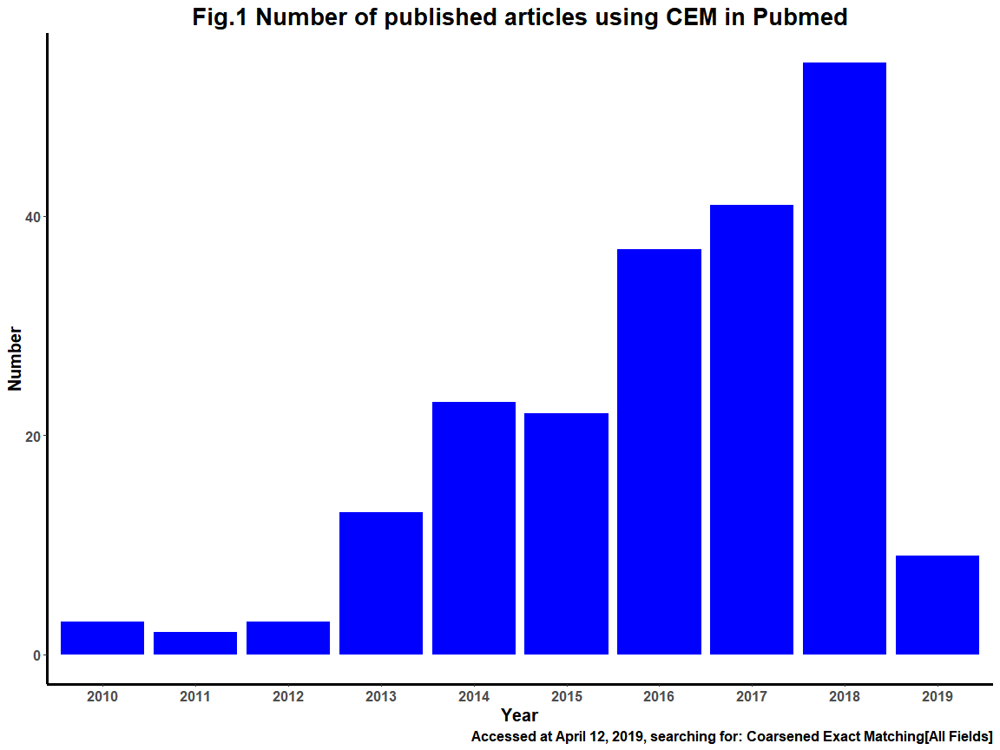
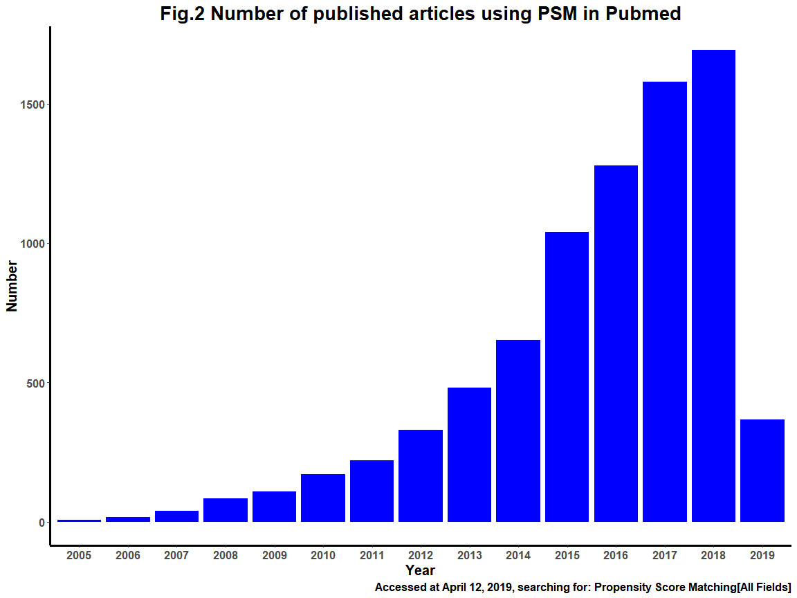
5.2.3 算法
CEM没有PSM那么复杂的反事实假设，其算法一共可分为三步：
- 将所有纳入匹配的协变量，粗化（coarsen）成离散分组，对于已是分类变量的协变量，可以自行设定（比如，性别、教育程度等），而对于连续型变量CEM算法会根据自动频率分布直方图进行自动粗化，当然也可以自行手动设定cutpoints，并且可以设定自动粗化的方法(Sturges’ rule, the default), “fd” (Freedman-Diaconis’ rule), “scott” (Scott’s rule) and “ss” (ShimazakiShinomoto’s rule)。
- 对所有粗化之后的分类进行分层并排序。
- 删除未同时包含至少一个Treat组和Control组的层。
5.2.4 不平衡度测量
CEM中引入了一个参数L1来衡量Treat组和Control组之间在协变量上的不平衡度，其计算公式如下：
L1(f, g) = ∑|fe(1…k)−ge(1…k)|
L1取值在0~1之间，0代表完全平衡，1代表完全不平衡。若L1为0.6，即说明有40%的粗化后各层的频率分布直方图在Treat组和Control组之间是重叠的，L1即是根据各层的相对频率差值求和而得，示例如下：
假设有三个协变量（X1…X），粗化后个协变量的分类为（2, 3, 5），那么粗化后共有235=30个层我们随机为Treat组和Control组在360个层生成一个正整数，最后计算频率并画出直方图。
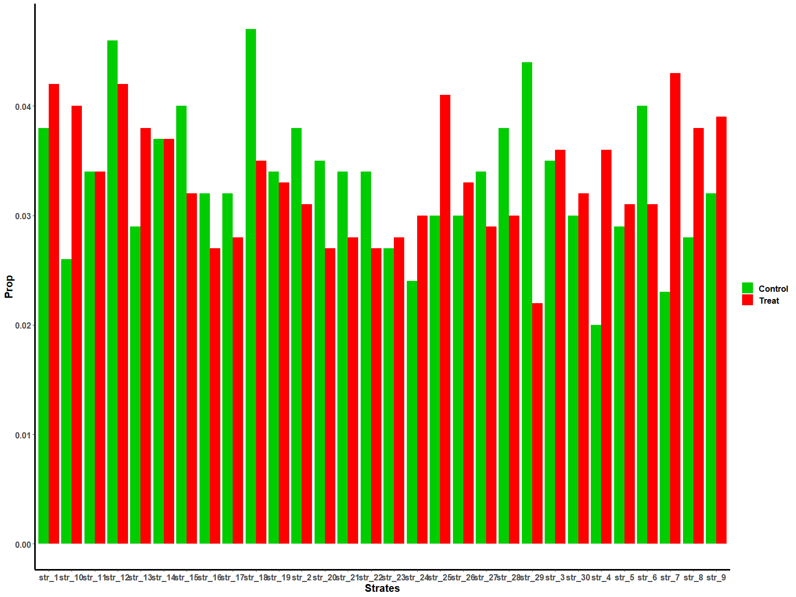
5.2.5 匹配
采用R语言中的cem包，示例的dataset为cem包中自带的LeLonde
5.2.5.1 示例的dataset介绍
Outcome variable: re78
Treat variable: treated, 1 = treat group, 0 = control group
Control variable: c(“age”, “education”, “black”, “married”, “nodegree”, “re74”, “re75”, “hispanic”, “u74”, “u75”,“q1”)
library(cem)
data(LeLonde)
df <- LeLonde[c("treated", "re78", "age",
"education", "black", "married",
"nodegree", "re74", "re75",
"hispanic", "u74", "u75", "q1")] %>%
na.omit()
head(df)5.2.5.2 匹配前准备：不平衡度测量
利用 imbalance() 函数对匹配的数据的不平衡进行测量，如下结果所示，整体不平衡度为0.902，意味数据存在较高的不平衡性。
对于连续型变量，默认计算mean in difference，对于分类变量默认计算chi square。
imbalance(group = df$treated, data = df[, -c(1, 2)])5.2.5.3 开始匹配
利用 cem()函数进行CEM匹配，参数treatment用来指定分组变量，drop用来排除结局变量。
从结果可以看出，Control组从全部392个样本中匹配上95例，Treat组从全部258个样本中匹配上84例，匹配后样本的整体L1为0.605，相比匹配前，有所下降。另外，从statistic列的结果也可看出，在各匹配变量中两组之间无统计学差异。
mat <- cem(treatment = "treated", data = df, drop = "re78", eval.imbalance = TRUE)
mat然而，此处我产生一个小疑惑，纳入匹配变量的数据类型是否会影响粗化分组过程，从而影响匹配结局？
因此，我将black、married等分类变量设置成factor类型，比较前后不平衡度测量及匹配结果。
区别，比较结果看出，与前述结果并无差异，仅在测量不平衡度时对于分类变量采用了chi square.
另一个明显的区别在于，对于设置成分类变量后，在进行匹配时，不会再对分类变量进行粗化。
df_1 <- df
df_1$black <- as.factor(df_1$black)
df_1$married <- as.factor(df_1$married)
df_1$nodegree <- as.factor(df_1$nodegree)
imbalance(group = df$treated, data = df_1[, - c(1, 2)])
cem(treatment = "treated", data = df_1, drop = "re78", eval.imbalance = TRUE)5.2.5.4 匹配后处理
匹配后生成的匹配对象（mat），其类为 cem.match，其属性实为 list。mat的数据结构如下，其中详细记录了匹配结果与参数，需要关注的有breaks，matched，w三个对象中的信息。
- breaks为一个list，其中记录匹配变量自动粗化过程中设置的cutpoint（仅包含numeric类型）
- matched实为一个逻辑向量，记录了该个体是否进入了匹配后的样本
- w为匹配权重（详细见5.5），用于后续的统计分析中
str(mat)提取匹配后的样本: CEM包中给出了不用单独提取出匹配后样本进行回归的函数 att(), 不过我个人比较倾向将匹配后的样本单独存储为一个对象， 但是 CEM包中并未给出像 MatchIt中的 match.out()函数，至少我还没有找到，所以只能自己动手，丰衣足食
# 提取匹配结果
mat$matched
# 提取匹配后的样本
df_matched <- cbind(df, mat$w, mat$matched)[which(mat$matched),]5.2.5.5 自行设定粗化的cutpoint
对于连续型变量或者类别较多的分类变量，可以通过 cem()函数中cutpoints和grouping两个参数来设定粗化的分割点，以下以cutpoints为例;
从上述匹配后的结果中可以看出age变量的自动cutpoint为 17, 20.8, 24.6, 28.4, 32.2, 36, 39.8, 43.6, 47.4, 51.2, 55
如果是采用算法自动设定cutpoint，可以通过 cem()函数 中L1.breaks = “fd”等（见3. 算法）来选择不同的方法。
如果自行设定，需要通过cutpoints = list(education = c(0, 6.5, 8.5, 12.5, 17))来设定，即通过list形式为需要的匹配变量 赋值一个数值向量。
grouping参数赋值同理，list(c(“strongly agree”, “agree”), c(“neutral”,“no opinion”), c(“strongly))，不过我个人比较习惯提前使用factor() 设定好分类。
5.2.5.6 权重weights的应用
由于CEM为不对称匹配，当一个Treat样本匹配多个Control样本时，需要通过权重来更准确的估计平均处理效应(ATT)，Gary King的原话如下：
They enable us to use a calculation trick that makes it easy to estimate the ATT in a weighted least squares regression program without the involved procedure.
关于权重需要注意的三点：
- 当匹配为不对称时，对匹配后的样本进行的所有的统计分析，都应对权重进行加权，在PSM中进行一对多匹配时同理。
- CEM中权重的理解十分简单，未匹配上的个案权重全为0，匹配上的Treat组个案权重都为1，匹配上的Control组个案的权重是对粗化后各层内Treat和Control组的样本比与全部样本中Treat和Control组的样本比相乘而来((m_C/m_T)*Ws)
- 匹配后样本的权重之和就等于匹配后样本量的大小，如本例中sum of weigths = sample of matched = 179
关于权重的具体计算方法，详见An Explanation for CEM Weights （需要科学上网）
5.2.5.7 k2k进行1:1匹配
虽然CEM的优势在于可以进行非对称匹配，从而保留更多的样本，但是当样本量比较充足时，为了保证更准确的估计ATT，可以进行1:1匹配，cem() 包 也给出了对应的函数 k2k() ，示列如下：
# 用单独的k2k函数时，之前生成cem对象mat时，必须加上keep.all = TRUE参数
# mat2 <- k2k(obj = mat, data = df, method = "euclidean", mpower = 1)
# 或
mat2 <- cem(treatment = "treated", data = df_1, drop = "re78",
eval.imbalance = TRUE, k2k = TRUE, method = "euclidean", mpower = 1)进行1:1匹配时，实际采用最近距离法在各层内选取，判断距离的方法可选（‘euclidean’, ‘maximum’, ‘manhattan’, ‘canberra’, ‘binary’ and ‘minkowski’)，默认为NULL，即随机选取。需要注意的一点是，使用k2k进行1:1匹配后，后续统计分析时就无需进行权重加权了。
5.2.6 参考文献
- Stuart, Elizabeth A. (2010): “Matching Methods for Causal Inference: A Review and a Look Forward”. In: Statistical Science, no. 1, vol. 25, pp. 1–21.
- Iacus SM, King G, Porro G (2008). “Matching for Causal Inference Without Balance Checking.” Submitted, URL http://gking.harvard.edu/files/abs/cem-abs.shtml.
- Stefano M Iacus, Gary King, and Giuseppe Porro. 2009. “CEM: Software for Coarsened Exact Matching.” Journal of Statistical Software, 30.
- Matthew Blackwell, Stefano Iacus, Gary King, and Giuseppe Porro. 2009. “CEM: Coarsened Exact Matching in Stata.” The Stata Journal, 9, Pp. 524–546.
- Stefano M Iacus, Gary King, and Giuseppe Porro. 2011. “Multivariate Matching Methods That are Monotonic Imbalance Bounding.” Journal of the American Statistical Association, 106, 493, Pp. 345-361.
- Stefano M. Iacus, Gary King, and Giuseppe Porro. 2012. “Causal Inference Without Balance Checking: Coarsened Exact Matching.” Political Analysis, 20, 1, Pp. 1–24. Website Copy at http://j.mp/2nRpUHQ
- Rosenbaum, Paul R. and Donald B. Rubin (1983): “The Central Role of the Propensity Score in Observational Studies for Causal Effects”. In: Biometrika, vol. 70, pp. 41–55.
- Cochran, W. G. (1968), “The Effectiveness of Adjustment by Subclassification in Removing Bias in Observational Studies,” Biometrics, 24, 295–313 [350].
- Why propensity scores should be used for matching,” German Stata Users’ Group Meetings 2017 01, Stata Users Group.
5.3 双重差分
5.3.1 简介
双重差分法（Difference-in-Difference，DID）通常又可称作倍差法或差异中的差异法，是目前社会科学领域用于开展政策效果评估和识别两个因素因果关联的最常用方法之一。DID最早由Orley Ashenfelter和David Card提出，两位学者于1985年在学术期刊《Review of Economics and Statistics》上发表了运用DID的方法估计美国综合就业和培训法案对收入的影响 (Ashenfelter 和 Card 1985) 。DID本质是一种准实验设计（Quasi-experimental Design），利用干预组和对照组的纵向数据来获得适当的反事实（counterfactual）来估计因果效应。具体而言，就是比较干预组人群和对照组人群之间的结果随时间的变化，其通常用于估计特定的干预或政策（如某项法律的通过、某种政策的实施或大规模项目实行）的效果。
DID的基本原理很简单，但是如果据此就认为采用DID识别框架的方法都很简单就错了，随着Joshua D. Angrist、Guido W. Imbens、Gary King、Susan Athey等经济学和统计学家对因果识别方法体系的贡献，时至今日，DID已经衍生出了非常多的类型来适用不同的研究设计和数据结构，可以说已经是一大方法家族了吧。
DID的统计学基础是哈佛大学著名统计学家 Rubin (1980) 提出的潜在结果模型（Potential Outcomes Model）或称为反事实框架 (Counterfactual Framework)，其核心思想在于利用“反事实”假设构造一个可比的对照组来消除样本选择偏误（Selection Bias）。根据潜在结果模型可知，要想获得某种干预的因果效应就必须比较同一个研究对象在接受干预和不接受干预时的结果差异，此时这种差异才是接受干预相对于不接受干预的效果。然而，对于同一研究对象而言，通常无法既观察其接受干预的结果，又观察其不接受干预的结果。对于接受干预的研究对象而言，不接受干预时的状态是一种 “反事实” 状态，对于不接受干预的研究对象而言，接受干预时的状态也是一种 “反事实” 状态。正是由于在同一研究对象中同一时点接受干预与非干预的状态存在互斥性，因此无法通过直接观察“反事实”状态下的效应值。
在医学研究中，为了解决这个问题通常采用随机对照试验（Randomized Controlled Trials，RCT）的方法，通过随机化的方法将一组具有高度同质性的研究对象随机分配去接受干预（Trentment Group）或不接受干预（Control Group）。由于研究对象具有高度同质性且通过随机化消除了样本选择偏误，那么就可以在限定条件下认为，未接受干预的那部分研究对象（Control Group）就是接受了干预的研究对象（Trentment Group）在未接受干预时（Untreated）的状态。但是，在政策研究中，通常无法人为对政策的执行施加影响，无法做到随机化，干预组和对照组的研究对象很难保证具有高度同质性，尽管如此，计量经济学家们探索出了利用干预组与对照组之间可能存在不随时间变化的系统性差异的特点，构造出了消除样本选择偏误而得到相对纯净政策效应的计量方法，其中就以DID为代表。
5.3.2 基本原理与假设
DID的基本原理较为简单，通过 图 5.1 中的示意图可以很直观的看出，干预组在干预前后两组的差值（\(\Delta_{Total}\)）减去对照组在干预前后两组的差值（\(\Delta_{Initial}\)）即可得到净干预效应（\(\Delta\Delta_Y\)）。
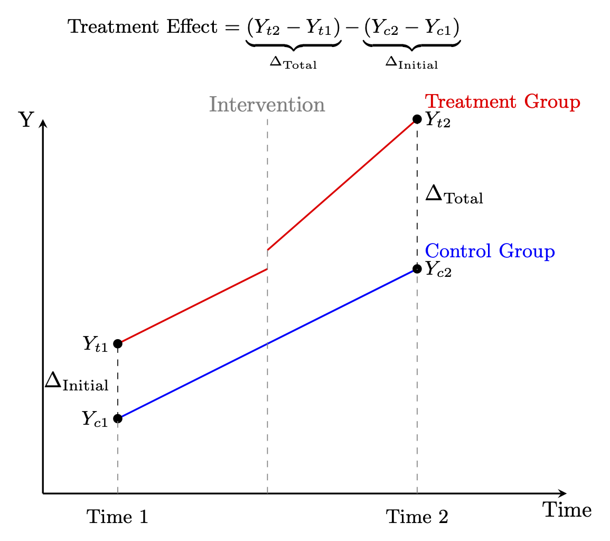
但是，在实际研究过程中，很少采用先分别计算得出\(Y_{t2}\)、\(Y_{t1}\)、\(Y_{c2}\)、\(Y_{c2}\)，再进行两次差分计算的方法，因为这样无法控制混杂因素的潜在影响。常用的方法是通过建立如 式 5.1 的回归模型来估计净干预效应。模型中各参数的具体含义在此不再赘述，具体可以参考Wooldridge的《计量经济学导论》，而关于为何通过回归模型的方法，估计得到的\(Treat_{it}*Time_{it}\)交互项系数\(\beta_3\)就是净干预效应，在教材和文献中相对提及的较少，本书在此做了简单演示，具体如 表 5.1 所示。干预前\(Time_{it}\)取值为0，对于干预组\(Treat_{it}\)取值为1，因此干预组在干预前的平均效应是\(\beta_0 + \beta_1\)，也就是 图 5.1 中的\(Y_{t1}\)，其他不同状态下的平均效应可以依次类推。
\[ y_{it} = \beta_0 + \beta_1 Time_{it} + \beta_2 Treat_{it} + \beta_3 \cdot Treat_{it}*Time_{it} + \epsilon_{it} \tag{5.1}\]
| 分组 | 干预前 | 干预后 | 差分 |
|---|---|---|---|
| 干预组 | \(\beta_0 + \beta_1\) | \(\beta_0 + \beta_1 + \beta_2 + \beta_3\) | \(\Delta_{y_t} = \beta_2 - \beta_3\) |
| 对照组 | \(\beta_0\) | \(\beta_0 + \beta_1\) | \(\Delta{y_c} = \beta_2\) |
| 差分 | - | - | \(\Delta\Delta_Y = \beta_3\) |
在了解了DID的基本原理后，这里再讨论另一个问题：为什么RCT的研究在估计干预效应时只差分（Diff）一次，而这里要Diff两次？这应该是很多刚接触DID的研究者都会问到的一个问题。这个问题的核心点在于\(\Delta_{Initial}\)的大小以及时间一致。在RCT研究中，通过严格的随机化已经保证了干预组和对照组之间个体的一致性，也就是在干预实施前同属一个总体，因此\(\Delta_{Initial}\)已足够小且不随时间变化，当其趋近于0时，就可以忽略不计，所以在RCT研究中通常只需要Diff一次。
然而在自然试验中，干预的实施通常未经过严格的随机化，存在随意性或者样本选择行为，这就导致干预组和对照组在干预实施前并非同属一个总体，因此\(\Delta_{Initial}\)往往较大，且不随时间变化，因此需要Diff两次来消除这个“间隙”。除此之外，若要希望\(Treatment\ Effect = \underbrace{(Y_{t2}-Y_{t1})}_{\Delta_{\text{Total}}} - \underbrace{(Y_{c2}-Y_{c1})}_{\Delta_{\text{Initial}}}\)，还需要满足另外一个条件：\(\Delta_{Initial}\)不随时间变化，即其应为常数。也就是需要满足共同趋势（Common Trends）假设或称为平行趋势（Parallel Pre-trends）假设。若不满足这个条件，就会出现如 图 5.2 所示的情况，此时两次Diff后的结果中包含了\(Y_{tm} - Y_{tn}\)的部分，而这部分就是由于\(\Delta_{Initial}\)随时间发生变化，其不为常数导致的。
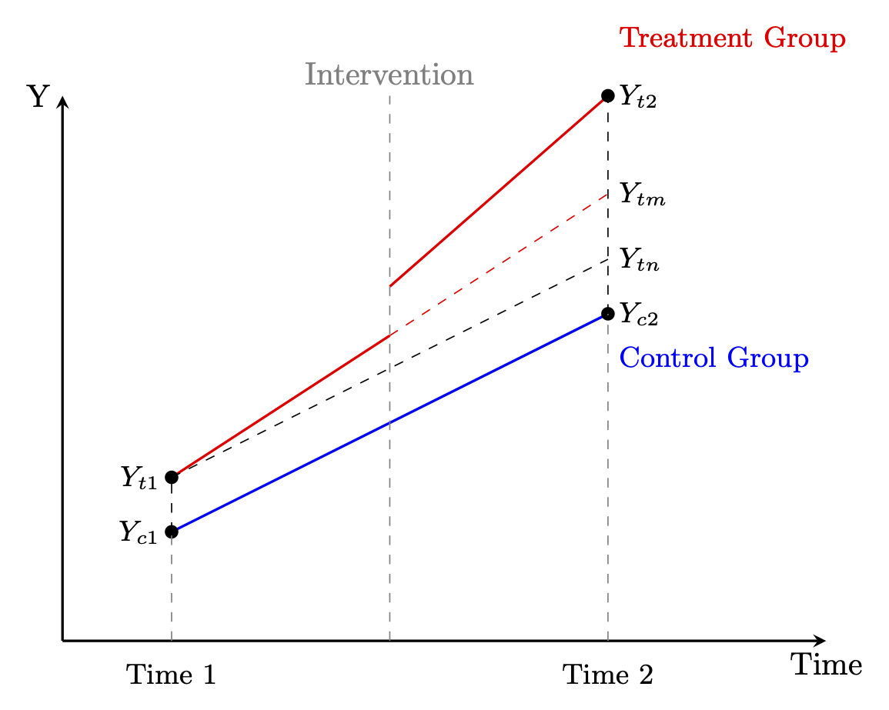
5.3.3 适用场景
与实验研究一样，类实验设计本质也是一种有对照的前后比较研究，想要获得因果推断效能的基本条件是能够分辨出时间先后，因此，DID对数据有比较高的要求，若想完成DID设计研究，在研究数据上至少应该满足以下4种情况之一。
两期及更多期的个体追踪数据（Longitudinal Data），计量经济学中称之为面板数据（Panel Data）：此类数据是开展DID设计研究的最优选择，可以进行差分方法的变化也最多，但是较难获得。好在最近些年开展的大规模人群调查都在采取追踪调查的方式，如CHARLS和CFPS等。
两个及以上时间点的个体横断面数据（微观数据）：这种数据通常被称为混合截面数据，其特点是不同时间的横断面调查，其调查对象不完全是相同的人群。很多较为早期开展的围观调查都是采取的这种形式，如自1993年开始每5年进行一次的国家卫生服务调查。对于此类数据，进行DID分析时，需要有一个变量，其能够在第一个横断面中识别出与第二个横断面中受到干预的个体相对应的个体即可，换句话说就是需要能够识别出第一个横断面中哪些个体属于干预组。通常可以通过
地区变量来分辨。例如，在采用国家卫生服务调查数据评估卫生政策试点效果时（如两保合一），试点的城市是明确的干预组，只要是在这些试点城市调查的个体，就可以识别为干预组。但是，利用混合截面数据开展DID研究时，需要考虑到一个局限性：无法避免多次横断面调查带来的抽样误差。因为两个横断面的个体并不是同一批人，尽管抽样误差会在组间差分时被减去，但有个前提，需要抽样误差在对照和干预个体中是均匀分布的，也就是每次横断面调查中对照组与干预组的抽样误差大小是一样的才可完全被差分掉。两期及更多期的机构或地区层面数据，就是常见的机构或地区面板数据（宏观数据）：相比于以上两种情况，此类数据更容易获得，通常为 小节 2.2.1 中所提到的行政数据类型。最常见的就是医院层面的年度或者月度报表（如卫生统计年报和月报）和省级或者县级面板数据。但是省级面板数据实际缺点较大，无法体现省内差异。
单一时点的个体横断面数据：严格来讲此类数据是无法进行双重差分设计的，但是也有采用横断面进行差分研究的实例，比如研究中国大饥荒的通过不同出生队列构建的差分模型。
5.3.4 估计方法
5.3.4.1 示例数据
以下代码主要生成一个模拟数据，基本情况为：1）是一个2010至2015年共6期的平衡面板，每期共有4000个观测；2）干预组和对照组每期各2000个观测；3）干预年份设定在了2014年，干预强度为5。示例数据对比图可见 图 5.3 。
#------生成对照组和干预组结局基本数列-------#
set.seed(2025)
y_t0 <- abs(rnorm(2000, 30, 100))
y_c0 <- abs(rnorm(2000, 20, 100))
#------设置相同的增幅，并设定干预-------#
y_t1 <- y_t0 * 1.05
y_t2 <- y_t0 * 1.05^2
y_t3 <- y_t0 * 1.05^3
y_t4 <- y_t0 * 1.05^4 + 5
y_t5 <- y_t0 * 1.05^5 + 8
y_c1 <- y_c0 * 1.05
y_c2 <- y_c0 * 1.05^2
y_c3 <- y_c0 * 1.05^3
y_c4 <- y_c0 * 1.05^4
y_c5 <- y_c0 * 1.05^5
#------设置年份和分组变量，组合成数据框-------#
year <- sort(rep(2010:2015, 2000))
y_t <- c(y_t0, y_t1, y_t2, y_t3, y_t4, y_t5)
y_c <- c(y_c0, y_c1, y_c2, y_c3, y_c4, y_c5)
group <- c(rep("treat", 12000), rep("control", 12000))
out <- c(y_t, y_c)
id <- c(rep(paste0("T", 1:2000), 6), rep(paste0("C", 1:2000), 6))
x <- rnorm(24000, 100, 12)
df <- data.frame("id" = id, "year" = c(year, year), "outcome" = out, "treatment" = group, "conf" = x)
#------设置生成时间和干预两个虚拟变量-------#
df$period <- ifelse(df$year >= 2014, 1, 0)
df$treatment_dum <- ifelse(df$treatment == "treat", 1, 0)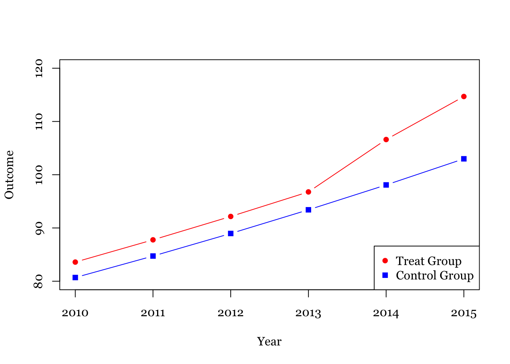
依据 式 5.1 ，模型设定比较简单，在此不过多解释，可以直接参考以下代码。但是，正如前文所述，DID设计最常使用的是面板数据，因此模型可以使用双向固定效应模式，如 式 5.2 示。式中没有了\(Treat\)和\(Time\)的单独固定效应，取而代之是\(\lambda_i\)和\(\mu_t\)代表的个体效应和时间效应。这样处理的优点在于模型中可以包含更多的个体和时间效应，如果仍然用\(Treat\)和\(Time\)会过于粗糙，\(Time\)的取值只有0和1，无法识别出完整的时间效应，而\(Treat\)同样存在这个问题。从 表 5.2 可以看出，两种方法估计的DID效应值均为6.988（示例数据中设定的5和8的加权平均值），但是根据 式 5.2 估计的标准误更小，且AIC也更小，说明模型更优。
\[ y_{it} = \beta \cdot Treat*Time + \lambda_i + \mu_t + \epsilon_{it} \tag{5.2}\]
library(plm)
library(modelsummary)
fit <- lm(outcome ~ treatment_dum : period + treatment_dum + period, data = df)
fit_twfe <-
plm(outcome ~ treatment_dum : period,
effect = "twoways",
model = "within",
index = c("id", "year"), data = df)
modelsummary(list("OLS模型" = fit, "双向固定效应模型" = fit_twfe), star = TRUE)| OLS模型 | 双向固定效应模型 | |
|---|---|---|
| (Intercept) | 86.950*** | |
| (0.795) | ||
| treatment_dum | 3.125** | |
| (1.124) | ||
| period | 13.586*** | |
| (1.377) | ||
| treatment_dum × period | 6.988*** | 6.988*** |
| (1.947) | (0.177) | |
| Num.Obs. | 24000 | 24000 |
| R2 | 0.015 | 0.072 |
| R2 Adj. | 0.014 | −0.114 |
| AIC | 272784.8 | 153349.6 |
| BIC | 272825.2 | 153365.8 |
| Log.Lik. | −136387.388 | |
| RMSE | 71.08 | 5.90 |
| + p < 0.1, * p < 0.05, ** p < 0.01, *** p < 0.001 |
5.3.5 平行趋势检验
平行趋势本质是无法直接检验的，目前所有的检验方法均是对干预前的干预组和对照组的趋势是否平行进行检验，从而推断若未施加干预，两组之间仍然是平行的。然而，干预前是平行变化的，并不代表在政策施加之后也是平行变化的，干预前的平行性既不是保证平行反事实趋势的必要条件，也不是充分条件 (Kahn-Lang 和 Lang 2020)。因此，通过了平行趋势检验只是提高了平行趋势假设成立的可能性，当并未真正检验了平行趋势。一种显然会违反平行趋势假设的情况是，当干预不是随机而是有选择性时，且这种选择性又与研究关注的结果相关联时，就出现因内生性导致的违反平行趋势假设。例如，在进行某项卫生政策试点效果评估时，试点城市的往往会选择哪些改革主动性强且卫生事业基础较好的地区，此时试点的干预组城市与潜在可能选择为对照组的城市，可能在卫生事业发展状况上很难满足平行趋势假设。正因为如此，部分学者 (Dimick 和 Ryan 2014; Ryan, Burgess, 和 Dimick 2015)提出了DID设计应该需要满足第二个假设：共同冲击（Common Shocks），也就是在干预后，外生变量对干预组和对照组的影响相同。
平行趋势假设检验现在主要有作图和回归两种方法，但是作图法在很多年前被广泛使用，因为其无法提供客观的评判标准，仅能凭主观判断，近些年的研究中已经较少见到。另外，对于只有两期或者三期数据的DID研究，其实是无法进行平行趋势检验的。本书中主要通过示例来说明回归法在平行趋势假设检验中的用法。回归法的估计模型如 式 5.3 所示，式中,_{gk}是一个虚拟变量，当观测周期相对于组 \(g\) 的首个处理期与 \(k\) 值相同时取值为1，否则为0（对于从未接受处理的组也始终为0）；\(T_0\) 和 \(T_1\) 分别表示处理期前后需考虑的最早（领先）和最晚（滞后）周期数；\(X\) 为控制变量。\(\phi\) 和 \(\gamma\) 分别表示州固定效应和时间固定效应。本书中提供了三种在R中实现的方法。
\[ Y_{gt} = \alpha + \sum_{k=T_0}^{-2} \beta_k \times \text{treat}_{gk} + \sum_{k=0}^{T_1} \beta_k \times \text{treat}_{gk} + X_{gt} \Gamma + \phi_g + \gamma_t + \epsilon_{gt} \tag{5.3}\]
5.3.5.1 实现方法一
自行生成 \(\sum_{k=T_0}^{-2} \beta_k \times \text{treat}_{gk}\) 和 \(\sum_{k=0}^{T_1} \beta_k \times \text{treat}_{gk}\) 项，然后将其作为固定效应放入回归模型，这也是最常见的一种实现方式。 表 5.3 展示了回归结果，从结果可以看出，模型给出的2014和2015年效应点估计值分别为5.168和8.344，这和示例数据中设定的5和8非常接近。同时，干预实施前年份的估计值均不显著。将回归结果用图形展示，可得 图 5.4 (左)，展示结果更为直观。若仔细观察 式 5.3 时，也许你会发现 \(\sum_{k=T_0}^{-2} \beta_k \times \text{treat}_{gk}\) 中 \(k\) 的取值最大只到-2，而不是-1，以下R代码中也未在回归模型时放入pre_1。具体原因为-1被指定为了参考时点，其回归系数值为0。那为何模型中会有参考时点呢？因为各时间点的回归系数所反应的是，各时间点的\(Y\)在干预组与对照组之间的平均差异，相对参考时点的\(Y\)在干预组与对照组的平均差异的差异大小，根据双重差分设计的基本原理，这个参考时点必须选择在干预前，最好是在距离干预最近的一个时间点，因此通常会选择干预前1期（-1期）。
library(coefplot)
df$pre_4 <- ifelse(df$year - 2014 == -4, 1, 0) * df$treatment_dum
df$pre_3 <- ifelse(df$year - 2014 == -3, 1, 0) * df$treatment_dum
df$pre_2 <- ifelse(df$year - 2014 == -2, 1, 0) * df$treatment_dum
df$pre_1 <- ifelse(df$year - 2014 == -1, 1, 0) * df$treatment_dum
df$current <- ifelse(df$year - 2014 == 0, 1, 0) * df$treatment_dum
df$post_1 <- ifelse(df$year - 2014 == 1, 1, 0) * df$treatment_dum
#-------------#
fit_ct <-
plm(outcome ~ pre_4 + pre_3 + pre_2 + current + post_1,
effect = "twoways",
model = "within",
index = c("id", "year"), data = df)
modelsummary(fit_ct, star = TRUE)| (1) | |
|---|---|
| pre_4 | −0.457 |
| (0.288) | |
| pre_3 | −0.312 |
| (0.288) | |
| pre_2 | −0.160 |
| (0.288) | |
| current | 5.168*** |
| (0.288) | |
| post_1 | 8.344*** |
| (0.288) | |
| Num.Obs. | 24000 |
| R2 | 0.078 |
| R2 Adj. | −0.107 |
| AIC | 153209.1 |
| BIC | 153257.7 |
| RMSE | 5.89 |
| + p < 0.1, * p < 0.05, ** p < 0.01, *** p < 0.001 |
需要注意的是，选择不同的参考时点，得出的系数会不一样。若将pre_4指定为对照组，则各时点的回归系数就会发生变化，如 图 5.4 (右)。若在回归时将所有时间点均纳入模型中，不管是在R或是Stata中，回归模型在计算过程时都会自动删除一个时间，通常为模型控制变量的第一项或者是最后一项。
fit_ct_2 <- plm(outcome ~ pre_3 + pre_2 + pre_1 + current + post_1,
effect = "twoways",
model = "within",
index = c("id", "year"), data = df)
coefplot(fit_ct, horizontal = T)
coefplot(fit_ct_2, horizontal = T)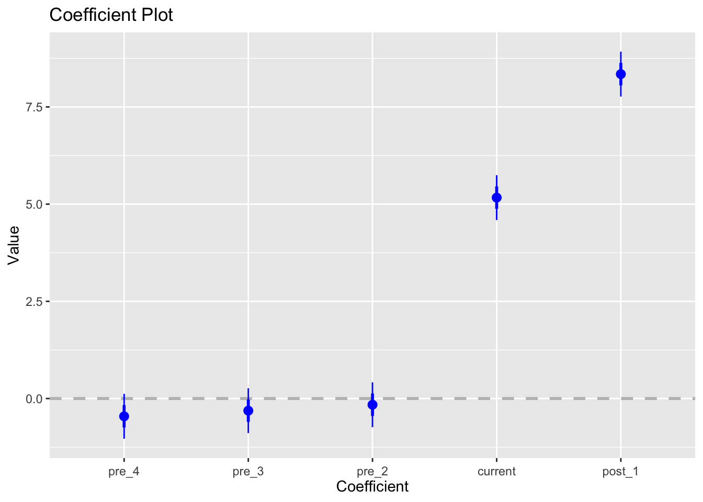
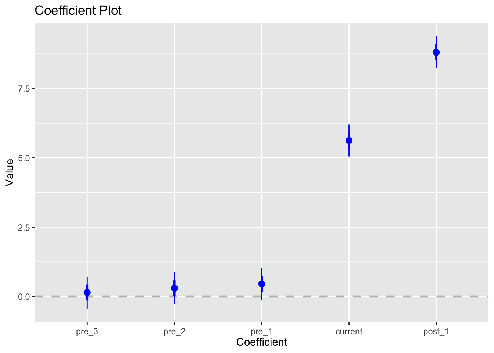
5.3.5.2 实现方法二
如果对虚拟变量设置方法有所了解，就会发现方法一中其实就是人为将分类变量转变为虚拟变量的过程，这也就解释了为何会有一个时间点被选择为了参照点，且回归系数是0。那么，既然是一个设置虚拟变量的过程，R或是Stata在运行回归模型时均已支持自动转换虚拟变量，因此可以通过以下方法实现相同的结果。只需要计算出每个年份距离干预年份相差几年即可，然后再将其与是否为干预组的指示变量相乘，这是最为关键的一步。在R中，在回归时虚拟变量的第一个项会被自动设定为参照组，在本示例中即为-1，结果见 图 5.5 。
df$time_to_treat <- df$year - 2014
df$time_to_treated <- factor(df$time_to_treat * df$treatment_dum, level = c(-1, -4, -3, -2, 0, 1))
fit_ct <- plm(outcome ~ time_to_treated,
effect = "twoways",
model = "within",
index = c("id", "year"), data = df)
coefplot(fit_ct, horizontal = T)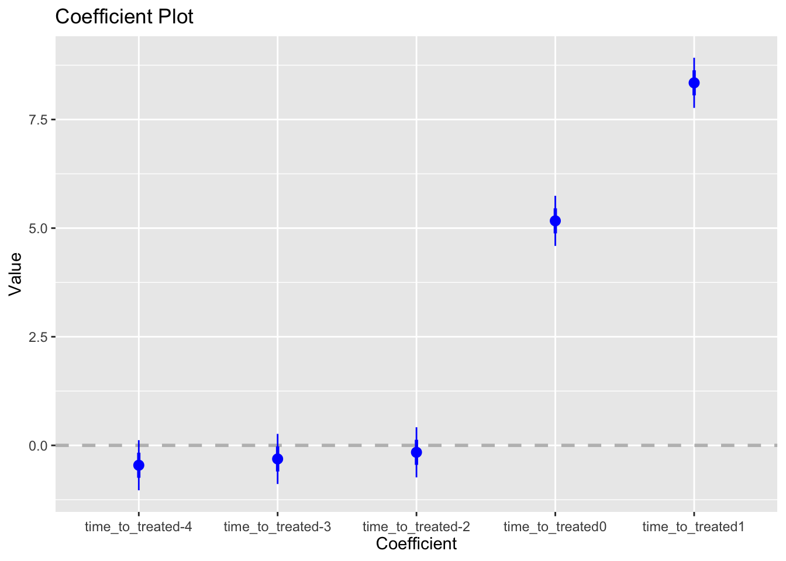
5.3.5.3 实现方法三
在R中有一个名为fixest的第三方包，提供了一种更为方便的方法，其可以省去方法二中自行将年份差值与干预组指示变量进行相乘的过程，且在输出的coefplot中会将参照时点也标记出，结果如 图 5.6 。本书作者推荐在coefplot中作图时，应该讲参照时点在图中标记出来。
library(fixest)
#--------ref = -1是指定参考时点--------#
mod_twfe <-
feols(outcome ~ i(time_to_treat, treatment_dum, ref = -1) + conf | id + year,
cluster = ~ id,
data = df)
iplot(mod_twfe,
ref.line = -1,
xlab = "Time to treatment",
main = "Common trend test")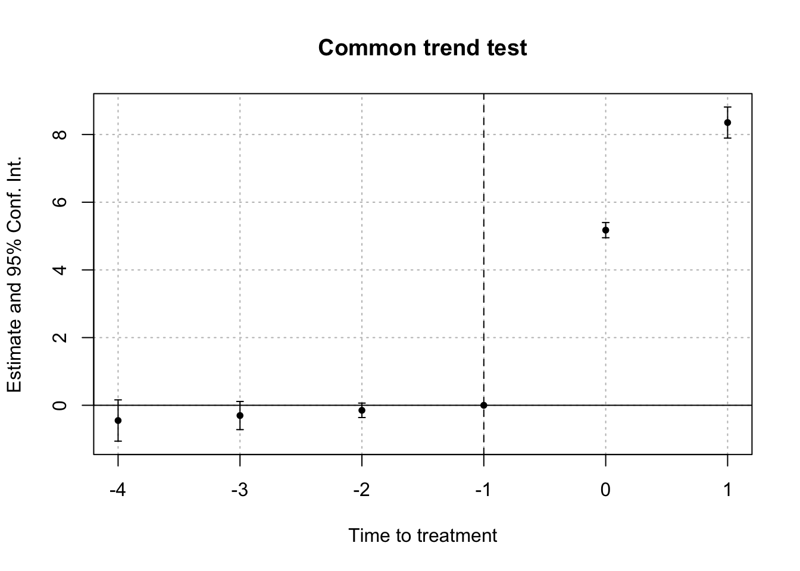
5.3.5.4 小结
以上介绍的平行趋势检验的回归法其实本质是双重差分的动态估计方法，其结果既可以用来观察干预前是否满足平行趋势，也可用来观察干预后不同时间点的动态效果。例如，在 小节 5.3.4 中进行DID估计时，得到的干预效应点估计值为6.988，而在 表 5.3 中，利用动态估计方法就可以准确估计出干预后1年的预效应点估计值为5.168，2年后为8.344，这就是动态估计的优势。但是关于动态估计的内容较多，本书在后续章节中会有详细介绍。
5.3.6 变化型一：Matching-DID
对于很多研究，其实无法检验平行趋势假设（如仅有两期或者三期数据），或者也很难满足结局变量平行趋势假设和共同冲击假设，那此时是否就不能使用DID设计了呢？严格来说肯定是不行的，但是也有处理办法，那就是现在很常用的匹配+双重差分设计，如PSM DID或者CEM DID。由于在 小节 5.2 中已经详细介绍了匹配的方法，因此本节中不在详细演示进行Matching DID的详细过程，仅介绍基本原理和注意事项。
为何Matching DID的方法就可以一定程度上解决平行趋势假设和共同冲击假设不满足带来的问题呢？其实核心点还是在于前文中提到的\(\Delta_{Initial}\)的大小以及时间一致，只要能将\(\Delta_{Initial}\)降低到足够小，即使平行趋势假设和共同冲击假设不满足，那么只要时间不太长，图 5.2 中展示的\(Y_{tm} - Y_{tn}\)就不会太大，因此依然能够保证两次Diff得到的结果较为干净。
那么，此时又会有一个问题会经常被问到：既然 小节 5.2 中已经提到横断面数据可以用匹配的方法进行效应估计，那既然都匹配了，也就是说趋近随机分组了，为什么还要Diff两次？其原因在于，想要真正做到随机分组，事后进行匹配的变量需要很多，事后匹配的效果与RCT还是有差别，\(\Delta_{Initial}\)只是变小了，但是仍然存在，所以还是需要用双重差分估计更干净的效应。
应用Matching DID设计时，有个问题是绕不开的：应该采用何种匹配策略。只匹配干预前的数据？如果干预前有多期应该匹配哪一期或是都匹配？干预后数据是否也需要匹配？等等，这是需要重点注意的一点。本书中将这些问题总结为了以下几种策略和注意事项，可供研究时参考：
- 对于面板数据，不论是微观个体还是宏观机构层面，也不论是两期或者多期面板，只匹配第一期数据（基期），这也是大多数研究所采用的办法。只要干预组和对照组的选择不是差异非常，或是存在非常明显的样本选择问题，多数时候只匹配第一期就可以实现干预期其他期实现平行趋势。这种处理方式可以保证达到平衡的前提下，损失最少的样本。
- 对于上述情况，如果匹配基期后，依然无法实现平行趋势假设，那此时可以考虑对干预前的所有时期均分别进行干预组和对照组匹配，如 Böckerman 和 Ilmakunnas (2009) 的研究。
- 对于两期混合截面数据，也就是 小节 5.3.3 中提到的第二种，匹配的策略就稍显复杂，主要有两种：
- 与上面一样，只对第一期中的干预组和对照组样本进行匹配，但是选择此策略需要满足一个前提，要有足够的证据支持干预前后的样本都是总体的随机样本，也就是干预前和干预后两个截面数据的抽样误差都要足够小。
- 如果第一期和第二期的两次样本很不一样，抽样误差可能很大时，需要通过匹配使得对照组前期（control-pre）、干预组前期（treated-pre）、对照组后期（control-post）、干预组后期（treated-post）这四组样本均达到均衡 (Stuart 等 2014)。那么就需要进行三次匹配：干预前对照组和干预组匹配，干预后对照组和干预组匹配，将前两次匹配后的样本再进行匹配（选择干预组或者对照组任一组）。这种匹配策略的缺点是会损失非常多的样本。
- 不论是选择PSM或是CEM，如果采取的是1:1匹配，那么在后续DID回归时不需要考虑匹配权重的问题，如果采取的不是1:1匹配，则需要在回归时进行加权回归（对干预前个体匹配获得的权重，应该也要赋给干预后的）。
- 另一个需要注意的问题，Matching时研究结局变量是否也需要纳入匹配变量中？很多人的第一反应会是当然不需要，匹配方法中强调过结局变量不可纳入匹配中。这一点没错，在横断面研究中进行均值差异（Difference in Mean）比较时是这样的，但是在DID中是需要纳入的（但是仅限于干预前的样本）。原因在上文中已经提到，Matching DID的主要目的就是为了减少研究结局变量的\(\Delta_{Initial}\)，所以需要将其进行匹配。Daw 和 Hatfield (2018) 在文章中也详细解释了要将结局变量纳入匹配的原因。但是也不排除只将结局变量之外的混杂变量纳入匹配后就可以满足平行趋势假设。
5.3.7 变化型二：Staggered-DID
在DID的经典型中，要求干预措施是在同一个时间施加给所有干预组的个体，这一看似简单的要求在实际研究开展过程中却经常无法满足。诸如在开展政策评估时，试点政策经常是在不同地区不同时间点逐步展开的，在卫生政策与管理领域更常见，如城镇居民医保与新型农村合作医疗的整合，是从2014年开始逐步试点直到2021年全国绝大部分地区完成整合。为了增加DID设计的适用性，有研究学者提出了针对干预措施不是在同一时间点施加给所有干预组个体的DID估计方法，一般称之为交错双重差分（Staggered-DID）。关于交错双重差分具体的原理已有文章详细梳理过(黄炜 2022; 刘冲 2022; 许文立 2023)，本书中不再详细赘述，仅聚焦在如何实现，以及在实现过程中应该注意的问题。
5.3.7.1 模型设定
在讨论交错DID的模型设定之前，可以先回顾一下经典DID的模型，如果将 式 5.1 用数据库的形式展示，那么将是如 表 5.4 (a) 所示。可以发现，表中Treat实际标记的是干预的分组，而\(Treat*Time\)（即DID项）标记的是干预状态，也就是某一个时间点下是否被施加了干预。弄清楚这一点后，就可以知道DID项其实只要能够指示干预状态即可。对于交错DID而言，尽管干预实施的时间不一样，对照组和干预组的样本是随时间动态变化的，依然可以像经典DID那样，通过一个虚拟变量即可识别出哪些个体属于干预组哪些属于对照组，再通过干预施加的时间来判断干预前后，两者的乘积就仍然是DID项。只是通常而言，在交错DID中，政策干预的动态效果更受关注，因此会增加一个类似\(Time to Treat\)的变量来识别干预的不同阶段，此时\(Time to Treat\)与传统DID项其实是等价的，如 表 5.4 (b) 所示。
| Individual | Year | Intervention Year | Treat | Time | Treat*Time |
|---|---|---|---|---|---|
| 01 | 2010 | 2014 | 1 | 0 | 0 |
| 01 | 2011 | 2014 | 1 | 0 | 0 |
| 01 | 2012 | 2014 | 1 | 0 | 0 |
| 01 | 2013 | 2014 | 1 | 0 | 0 |
| 01 | 2014 | 2014 | 1 | 1 | 1 |
| 01 | 2015 | 2014 | 1 | 1 | 1 |
| 02 | 2010 | 2014 | 0 | 0 | 0 |
| 02 | 2011 | 2014 | 0 | 0 | 0 |
| 02 | 2012 | 2014 | 0 | 0 | 0 |
| 02 | 2013 | 2014 | 0 | 0 | 0 |
| 02 | 2014 | 2014 | 0 | 1 | 0 |
| 02 | 2015 | 2014 | 0 | 1 | 0 |
| … | … | … | … | … | … |
| Individual | Year | Intervention Year | Time to Treat | Treat | Time | Treat*Time | Time to Treat*Treat |
|---|---|---|---|---|---|---|---|
| 01 | 2010 | 2014 | pre_4 | 1 | 0 | 0 | 0 |
| 01 | 2011 | 2014 | pre_3 | 1 | 0 | 0 | 0 |
| 01 | 2012 | 2014 | pre_2 | 1 | 0 | 0 | 0 |
| 01 | 2013 | 2014 | pre_1 | 1 | 0 | 0 | 0 |
| 01 | 2014 | 2014 | current | 1 | 1 | 1 | current |
| 01 | 2015 | 2014 | post_1 | 1 | 1 | 1 | post_1 |
| 01 | 2016 | 2014 | post_2 | 1 | 1 | 1 | post_2 |
| 02 | 2010 | 2015 | pre_5 | 1 | 0 | 0 | 0 |
| 02 | 2011 | 2015 | pre_4 | 1 | 0 | 0 | 0 |
| 02 | 2012 | 2015 | pre_3 | 1 | 0 | 0 | 0 |
| 02 | 2013 | 2015 | pre_2 | 1 | 0 | 0 | 0 |
| 02 | 2014 | 2015 | pre_1 | 1 | 0 | 0 | 0 |
| 02 | 2015 | 2015 | current | 1 | 1 | 1 | current |
| 02 | 2016 | 2015 | post_1 | 1 | 1 | 1 | post_1 |
| 03 | 2010 | / | / | 0 | 0 | 0 | 0 |
| 03 | 2011 | / | / | 0 | 0 | 0 | 0 |
| 03 | 2012 | / | / | 0 | 0 | 0 | 0 |
| 03 | 2013 | / | / | 0 | 0 | 0 | 0 |
| 03 | 2014 | / | / | 0 | 0 | 0 | 0 |
| 03 | 2015 | / | / | 0 | 0 | 0 | 0 |
| 03 | 2016 | / | / | 0 | 0 | 0 | 0 |
| … | … | … | … | … | … | … | … |
在了解清楚上面的内容后，交错DID的模型设定就很好理解了，即 式 5.4 ，其实也就是 式 5.3 的变化形式。其中，\(\text{treat}_{gt}^k\)就是标记的干预状态，等价于DID项。
\[ Y_{gt} = \alpha + \sum_k \beta_k \times \text{treat}_{gt}^k + X_{gt} \Gamma + \phi_g + \gamma_t + \epsilon_{gt} \tag{5.4}\]
5.3.7.2 示例数据
以下代码主要生成一个模拟数据，基本情况为：1）是一个2010至2015年共6期的平衡面板，每期共有3500个观测；2）从2010至2015年间，动态施加干预；3）干预强度在不同的个体中不同，且越晚干预强度越大；4）干预一旦施加就一直存在，不存在干预强度减弱。干预情况的示意分组如 表 5.5 。
| ID | 2010 | 2011 | 2012 | 2013 | 2014 | 2015 |
|---|---|---|---|---|---|---|
| I1～500 | 0 | 50 | 50 | 50 | 50 | 50 |
| I501～1000 | 0 | 0 | 100 | 100 | 100 | 100 |
| I1001～1500 | 0 | 0 | 0 | 150 | 150 | 150 |
| I1501～2000 | 0 | 0 | 0 | 0 | 200 | 200 |
| I2001～2500 | 0 | 0 | 0 | 0 | 0 | 250 |
| I2501～3000 | 0 | 0 | 0 | 0 | 0 | 0 |
library(dplyr)
set.seed(2025)
df_stag <- expand.grid("year" = 2010:2015,
"ID" = paste0("I", 1:3000))
df_stag$outcome <- abs(rnorm(18000, 30, 100))
df_stag <-
mutate(df_stag,
outcome_trt = case_when(
ID %in% paste0("I", 1:500) & year >= 2011 ~ outcome + 50,
ID %in% paste0("I", 501:1000) & year >= 2012 ~ outcome + 100,
ID %in% paste0("I", 1001:1500) & year >= 2013 ~ outcome + 150,
ID %in% paste0("I", 1501:2000) & year >= 2014 ~ outcome + 200,
ID %in% paste0("I", 2001:2500) & year >= 2015 ~ outcome + 250,
TRUE ~ outcome),
intervention_year = case_when(
ID %in% paste0("I", 1:500) ~ 2011,
ID %in% paste0("I", 501:1000) ~ 2012,
ID %in% paste0("I", 1001:1500) ~ 2013,
ID %in% paste0("I", 1501:2000) ~ 2014,
ID %in% paste0("I", 2001:2500) ~ 2015,
ID %in% paste0("I", 2501:3000) ~ NA)
)5.3.7.3 具体操作过程
关于交错DID的回归代码，与 小节 5.3.5 中平行趋势检验的方法基本相同，此处仅介绍两种。一种是基于第三方fixest包，另一种是第三方plm包。不论采取何种方法，都需先计算两个变量：反映分组的\(group\)变量和反映距离干预施加时间的\(time_to_treat\)变量。需要说明的是，如果实际研究中不存在在任何时间点都未被施加过干预的情况，那么直接令\(group=1\)即可。以下代码均是采用双向固定效应（Two Way Fixed Effect，TWFE）估计方法，使用fixest和plm包估计结果基本相同（见 图 5.7 ），但是plm包需要在输出估计结果时计算聚类标准误，而fixest不需要。
#------方法一------#
library(fixest)
df_stag$group <- ifelse(df_stag$ID %in% paste0("I", 2501:3000), 0, 1)
#----如果存在group为0的情况，此处赋值可以是任意值，不一定是0，因为后续与group相乘后都会为0-----#
df_stag$time_to_treat <-
ifelse(df_stag$group == 1, df_stag$year - df_stag$intervention_year, 0)
#--------ref = -1是指定参考时点--------#
fit_stag_twfe_fixest <-
feols(outcome_trt ~ i(time_to_treat, group, ref = -1) | ID + year,
cluster = ~ ID,
data = df_stag)
#------方法二------#
library(plm)
df_stag$time_to_treated <-
factor(df_stag$time_to_treat * df_stag$group, level = c(-1, -5, -4, -3, -2, 0, 1, 2, 3, 4))
fit_stag_twfe_plm <- plm(outcome_trt ~ time_to_treated,
effect = "twoways",
model = "within",
index = c("ID", "year"), data = df_stag)
modelsummary(fit_stag_twfe_fixest, star = TRUE)
modelsummary(fit_stag_twfe_fixest, star = TRUE, vcoc = "robust")
# 聚类标准误
# summary(fit_stag_twfe_plm, vcov = function(x) vcovHC(x, cluster = "group")) | (1) | |
|---|---|
| time_to_treat = -5 × group | −64.513*** |
| (4.318) | |
| time_to_treat = -4 × group | −42.990*** |
| (3.305) | |
| time_to_treat = -3 × group | −25.665*** |
| (2.591) | |
| time_to_treat = -2 × group | −12.045*** |
| (2.031) | |
| time_to_treat = 0 × group | 154.470*** |
| (2.118) | |
| time_to_treat = 1 × group | 136.996*** |
| (2.403) | |
| time_to_treat = 2 × group | 121.379*** |
| (2.968) | |
| time_to_treat = 3 × group | 101.019*** |
| (3.728) | |
| time_to_treat = 4 × group | 89.058*** |
| (4.885) | |
| Num.Obs. | 18000 |
| R2 | 0.603 |
| R2 Adj. | 0.523 |
| R2 Within | 0.378 |
| R2 Within Adj. | 0.378 |
| AIC | 204249.5 |
| BIC | 227753.1 |
| RMSE | 59.57 |
| Std.Errors | by: ID |
| FE: ID | X |
| FE: year | X |
| + p < 0.1, * p < 0.05, ** p < 0.01, *** p < 0.001 |
| (1) | |
|---|---|
| time_to_treat = -5 × group | −64.513*** |
| (4.318) | |
| time_to_treat = -4 × group | −42.990*** |
| (3.305) | |
| time_to_treat = -3 × group | −25.665*** |
| (2.591) | |
| time_to_treat = -2 × group | −12.045*** |
| (2.031) | |
| time_to_treat = 0 × group | 154.470*** |
| (2.118) | |
| time_to_treat = 1 × group | 136.996*** |
| (2.403) | |
| time_to_treat = 2 × group | 121.379*** |
| (2.968) | |
| time_to_treat = 3 × group | 101.019*** |
| (3.728) | |
| time_to_treat = 4 × group | 89.058*** |
| (4.885) | |
| Num.Obs. | 18000 |
| R2 | 0.603 |
| R2 Adj. | 0.523 |
| R2 Within | 0.378 |
| R2 Within Adj. | 0.378 |
| AIC | 204249.5 |
| BIC | 227753.1 |
| RMSE | 59.57 |
| Std.Errors | by: ID |
| FE: ID | X |
| FE: year | X |
| + p < 0.1, * p < 0.05, ** p < 0.01, *** p < 0.001 |
然而，采用双向固定效应在单一干预时点的经典DID设计中可以得到无偏估计，在非单一时点的交错DID设计中却不一定。对于干预强度随时间变化而变化，或是干预在不同的个体中强度不一致时，双向固定效应估计会出现偏误，Sun 和 Abraham (2021)，Goodman-Bacon (2021) 以及@callaway2021 等学者均指出了这些问题并提出了解决办法，具体原理可参看原文，或者参考 刘冲 (2022) 的文章。
fixest包中给出了使用 Sun 和 Abraham (2021) 提出方法的函数，具体如下代码。如果有仔细观察本小节中的示例数据，就会发现设置的干预强度随着时间的变化在逐步加强，而 图 5.7 中结果证实了TWFE估计方法面对这样的研究场景时，无法获得准确估计，而 Sun 和 Abraham (2021) 提出的方法能够更好的靠近真实干预效应。使用fixest包中sunab函数时，需要注意一点，对于从未施加干预的个体，其干预年份理应为空值（如示例数据），但是若设置为缺失，会使得这部分样本在进行SunAb算法中被剔除。因此，在使用该函数时，需要生成一个新的变量intervention_year_sunab，将缺失值赋予一个研究年份之外的任意数值即可，为了后续使用Callaway算法更方便，此处取0。
#------#
df_stag$intervention_year_sunab <- ifelse(df_stag$group == 0, 0, df_stag$intervention_year)
#------#
fit_stag_sunab <-
feols(outcome_trt ~ sunab(intervention_year_sunab, year) | ID + year,
cluster = ~ ID,
data = df_stag)
iplot(list(fit_stag_twfe_fixest, fit_stag_sunab), ref.line = -1,
xlab = "Time to treatment")
#------#
true_effect <- aggregate((outcome_trt - outcome) ~ time_to_treat, subset(df_stag, group == 1), mean)[[2]]
points(-5:4, true_effect, pch = 15, col = 4)
legend("bottomright", col = c(1, 4, 2), pch = c(20, 15, 17),
legend = c("TWFE", "Truth", "Sun & Abraham (2020)"))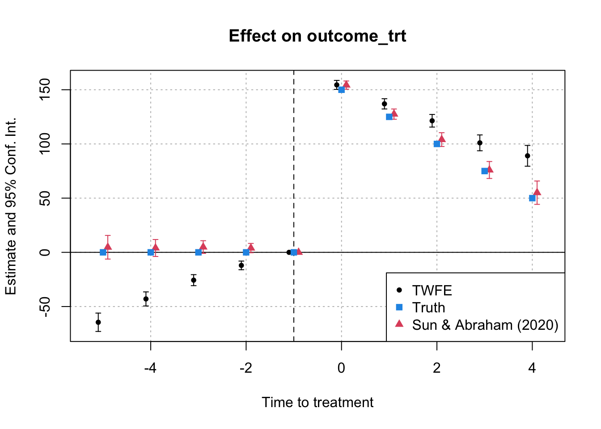
除此之外，Callaway 和 Sant’Anna (2021) 等学者也提供了使用其估计方法的第三方包 did，其既可以给出一个单一加权平均估计值，也可以给出不同时点的动态估计值（如 图 5.8 ），此方法与TWFE相比，估计结果更贴近真实值。需要注意的是，did在给出动态估计结果时，默认将干预前最早的时点作为参照点，在本例中是-5期，而非-1期。
library(did)
df_stag$id_name <- as.numeric(stringr::str_remove(df_stag$ID, "I"))
df_stag_attgt <- att_gt(yname = "outcome_trt",
tname = "year",
panel = TRUE,
control_group = "notyettreated",
idname = "id_name",
gname = "intervention_year_sunab",
clustervars = "id_name",
xformla=NULL,
data = df_stag
)
#------#
agg_simple <- aggte(df_stag_attgt, type = "simple")
summary(agg_simple)
Call:
aggte(MP = df_stag_attgt, type = "simple")
Reference: Callaway, Brantly and Pedro H.C. Sant'Anna. "Difference-in-Differences with Multiple Time Periods." Journal of Econometrics, Vol. 225, No. 2, pp. 200-230, 2021. <https://doi.org/10.1016/j.jeconom.2020.12.001>, <https://arxiv.org/abs/1803.09015>
ATT Std. Error [ 95% Conf. Int.]
121.2562 2.3873 116.5772 125.9353 *
---
Signif. codes: `*' confidence band does not cover 0
Control Group: Not Yet Treated, Anticipation Periods: 0
Estimation Method: Doubly Robustagg_es <- aggte(df_stag_attgt, type = "dynamic", na.rm = TRUE)
# summary(agg.es)
ggdid(agg_es)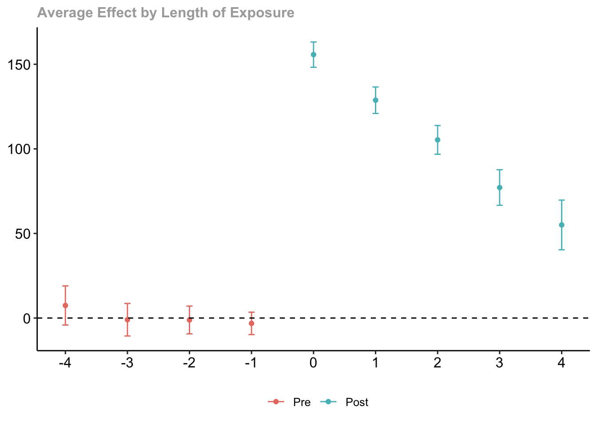
5.3.7.4 小结
在不同的文章或者教程中，也有将交错DID称为动态DID（Dynamic Difference-in-Differences）或者事件分析法（Difference-in-Differences Event Study）的，这样自然是没有问题的，只是过于笼统。不管是经典DID还是交错DID，都有两种估计结果的展示方式，静态和动态估计。静态估计是指不管干预后有几期数据，只给出一个效应估计值，这个值一个加权平均的效应。动态估计是指如果干预后有两期及以上期数的观测值，可以对干预前以及干预后每一期都给出一个效应估计值，这样就可以很清楚地观察到干预是否存在即时效应或者滞后效应等等，以及干预前是否满足平行趋势假设。总结一句话就是，事件分析法或者动态DID估计法既适用于单一时间点干预也适用于不同时间点干预的场景，具体如 表 5.7 示。
除了交错双重差分外，也有学者将双重差分设计与合成控制法以及断点回归方法相结合，提出了诸如Synthetic DID和RD-DID等前沿方法，由于这些方法仍在发展过程中，不本不做详细介绍了。
| 冲击时间 | 静态估计（加权平均） | 动态估计 |
|---|---|---|
| 同一时点 | 经典DID | 事件分析法，平行趋势检验 |
| 不同时点 | 交错DID | 事件分析法，平行趋势检验 |
5.4 工具变量
5.5 断点回归
5.5.1 简介
断点回归（Regression Discontinuity）适用于以下情形：人群是否接受干预（Treatment）是依据某一数值变量（rating variable）是否高于或低于某一确定的阈值（threshold）或者分割点（cut-point），例如在研究是否上大学会影响收入时，数值变量（rating variable，也叫 assignment variable，score，running variable，forcing variable， or index）就是高考分数，阈值或者分割点就是本科录取分数线。以下内容主要参考：(Calonico 等 2022; D. Cattaneo, Idroboy, 和 Titiunik 2017; Jacob, Zhu, 和 Marie-Andrée 2012; 谢谦, 薛仙玲, 和 付明卫 2019)。
5.5.2 发展历史
Regression Discontinuity最早由社会学家Thistlethwaite and Campbell 在1960年提出的，用于评估社会项目，但是他们的研究虽然引起一些影响但是没有得到广泛的注意，后来，在1972-2009年期间，被一系列经济学家(Goldberger，van der Klaauw，Imbens and Kalyanaraman等)在方法学方面进行了完善，最终在2008年达到顶峰，标志是在2008年Journal of Econometrics出了一期RD分析的Special Issue，光看期刊名字就知道是经济学顶刊了(Journal of Econometrics是公认的计量经济学顶尖期刊，是教育部认可的12本经济学国际顶级期刊之一 )。
5.5.3 特点与分类
RD有两个特点：
- 在Rating variable的一个明确点上，outcome出现了跳跃或者不连续(discontinuity at a cut-point)
- 可以认为在一个限定的rating variable区间上，个体是服从局部随机的(local randomization)
RD有两种类型：
精确断点(sharp design): 即所有个体(All subject)在明确的cut-point之后全部接受干预(treatment)
模糊断点(fuzzy design): 即在cut-point前后，存在 no-shows (treatment group members who do not receive the treatment)或者crossovers (control group members who do receive the treatment) ，换句话说就无法找到一个明确的cut-point完全区分干预和对照组。更严格的分法是，fuzzy也可以分成两类：type I是no-shows，只存在处理组有未接受处理的个体，type II是同时存在no-shows和crossovers。实际就是RCT中常说的沾染问题。
5.5.4 适用RD分析的先决条件(Conditions for Internal Validity)
由于RD仍然属于非实验方法，尽管也被成为类实验(quasi-experimental)，但本质还是非实验方法(nonexperimental)， 所以它必须满足一系列前期条件，才能提供无偏估计和更可能的接近RCT的严格情形。
一、 Rating variable (中文的翻译很多，但比较通用的翻译为驱动变量或者配置变量)不能被干预(treatment)所影响，Rating variable 的值必须是在干预(treatment)之前就已经确定了，或者是不可再更改的变量。也就是只能是驱动变量的值决定是否接受干预，不能是干预决定驱动变量的值。比如：高考成绩(Rating variable)是在判断是否能够上大学(treatment)之前就已经确定了，并且分数不会再发生变化，如果存在严重的根据分数线修改高考成绩的情况，则高考分数就不能作为Rating variable。 检验方法是：画Rating variable的频率分布直方图或者密度图，再进行McCrary 检验
二、 断点(cut-point)是完全外生的，并且干预与否完全取决于驱动变量和断点。即断点不受其他因素影响而改变干预的判断，即把本不该接受干预的对象划入了干预，或者把该接受干预的对象划入了对照。 比如，如果高考录取线(cut-point)的确定是完全已经严格的录取指标划定的， 而不存在为了使得某部分人群能够获得上大学的机会，而修改录取线。
三、 在驱动变量的cut-point前后，除了干预与否(treatment)是不连续或者跳跃的(比如断点前为0，断点后为1)，其他任何因素都不能出现不连续或者跳跃(Nothing other than treatment status is discontinuous in the analysis interval)，因为要保证outcome的跳跃只能是干预的不连续或者跳跃导致的。比如，如果高考分数线除了决定是否能上大学外，还决定是否享有创业扶持机会，那么如果研究上大学对某种结局的影响，就无法分离出到底是大学教育导致，还是获得创业扶持机会导致的。
四、 驱动变量(rating variable)与结局变量(outcome)之间的函数关系应该是连续的，严格的说，应该是在进行RD分析的这段区间内(interval)是连续的。换句话说就是，如果不存在干预的情况，驱动变量与结局变量之间不会出现不连续或者跳跃，才能在结局变量出现不连续的情况下，反推出是干预引起的，因为只有干预是不连续的。注意：此条件只需要在选择参数估计方法是要满足(applies only to parametric estimators)
5.5.5 断点回归的图形分析(Graphical Presentations in the RD)
图形分析是进行RD的第一步，也是非常重要的组成部分
通常，进行RD至少需要画4种图：
- 驱动变量与干预之间的关系图，在这一步可以确定是应该采取Sharp还是Fuzzy断点回归设计
- 非结局变量与驱动变量的关系图，可以用来判断是否满足第3条内部有效性(Internal Validity)条件
- 驱动变量的密度分布图，是为了判断驱动变量是否连续，以及在cut-point附近是否存在被操控，可以用来判读石佛满足第1条内部有效性(Internal Validity)条件
- 结局变量与驱动变量的关系图，可以帮助预估干预效应的大小，以及判断结局变量与驱动变量之间的函数关系。而且必须是结局变量在纵轴，驱动变量在横轴。注意：通常这一幅图是用来初步判断整个研究是否能够获得预期的干预效应的，如果在这幅图中无法观测到明显的jump，基本后续的分析也是徒劳。
5.5.6 进行RD分析的步骤及示例
示列软件: R version 4.2.3 (2023-03-15)
示列分析包：在R语言中一共有三个package可以进行RD分析：
- rdd: 由Dimmery在2016年发布，最后一次更新是2016-3-14，貌似目前没有获得积极的更新
- rddfools：由Stigler & Quast最早在2013年发布，最后一次更新是2015-07-27，貌似目前也没有获得积极的更新
- rdrobust：由Sebastian Calonico, Matias D. Cattaneo, Max H. Farrell等在2016年发布的，最后一次更新是2018-09-26，是目前功能最完善的RD分析包，同时也开发了Stata版本。该包的作者同时也是RD方法学上的大佬，多种bandwidfh选择方法的发明者，著名的CCT就是。
rdrobust简介：目前该包的开发项目可在https://sites.google.com/site/rdpackages/home主页上查看，该包共有三个函数： + rdplot：用来画图 + rdrobust：用来进行局部非参数估计 + rdbwselect：用来进行bandwidfh选择 另外还有一个协同的包rddensity，需要从CRAN上单独安装，用来进行对驱动变量是否被操控进行检验，因为rdrobust包未包含McCrary检验
示列数据集：采用rdrobust包中自带的rdrobust_RDsenate数据集：
- 数据集简介：该数据集包含了1914–2010年间美国参议院选举的数据，可以利用RD的方法分析民主党赢得参议院席位对于在下次选举中获得的相同席位的影响。该数据共包含两个变量：
> + vote：记录了州级层面下的参议院议席中民主党所占的比例，值从0到100，是RD分析中结局变量 > + margin：记录了民主党在上次选举中获得相同参议院席位的胜利边际，值从-100到100，当大于0时，说明民主党胜利，小于0则输了，是RD分析中的驱动变量
5.5.6.1 Step 1: 确定驱动变量(Rating variable)和断点(Cut-point)
根据研究设计，判断是否存在采用RD进行因果识别或者效应估计的可能，即是否可以找到合适的驱动变量和明确的断点来识别施加干预的状态。
通常情况下时间（具体到天）、年龄（如研究退休，代表性的文章: “退休影响会健康吗”）、地理距离（研究雾霾，代表性文章: “冬季供暖导致雾霾？来自华北 城市面板的证据”）比较容易作为驱动变量。
5.5.6.2 Step 2: 内部有效性(Internal Validity)条件的检验
1) 条件一：通过画驱动变量的频率分布直方图或者密度分布图，以及McCrary检验
可以利用graphics包或者ggplot2包画histogram图，也可以利用rddenstiy包中的rddenstiy函数画密度图，也可利用rdd包进行McCrary检验。
rddenstiy函数的其他参数可以用默认值，输出结果中，最下面一行robust的p值大于0.05，就说明驱动变量未受到操纵。
- 方法一
library(rdrobust)
library(rddensity)
library(magrittr)
data(rdrobust_RDsenate)
hist(x = rdrobust_RDsenate$margin,
breaks = 30,
col = 'red',
xlab = 'margin',
ylab = 'Frequance',
main = 'Histogram of Rating Variable')
abline(v = 0)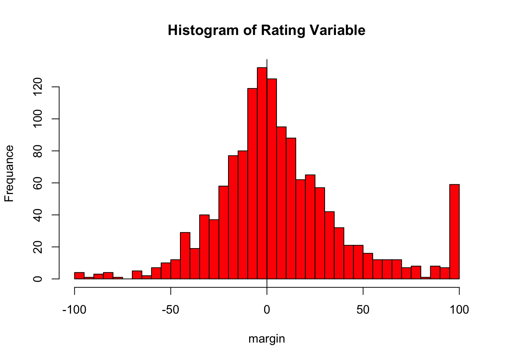
- 方法二
library(ggplot2)
ggplot(rdrobust_RDsenate) +
geom_histogram(aes(x = margin,
fill = margin < 0),
color = 'black',
binwidfh = 4, boundary = 4) +
geom_vline(xintercept = 0, size = 1) +
labs(title = 'Histogram of the Rating varibale',
y = 'Number of Observation',
x = 'Margin') +
scale_fill_manual(name = '',
values = c('red', 'blue'),
labels = c('Control', 'Treat')) +
theme_bw() +
theme(legend.position = c(.9, .9),
legend.background = element_blank())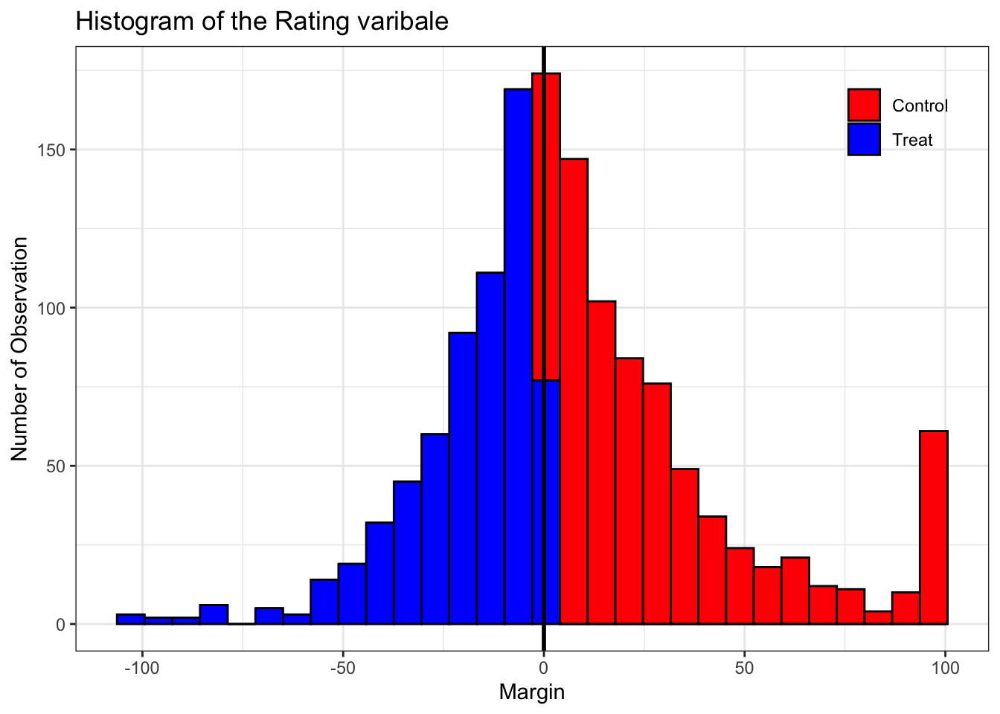
- 方法三
rdplotdensity(rddensity(rdrobust_RDsenate$margin),
X = rdrobust_RDsenate$margin)$Estplot[1]$data
list()
attr(,"class")
[1] "waiver"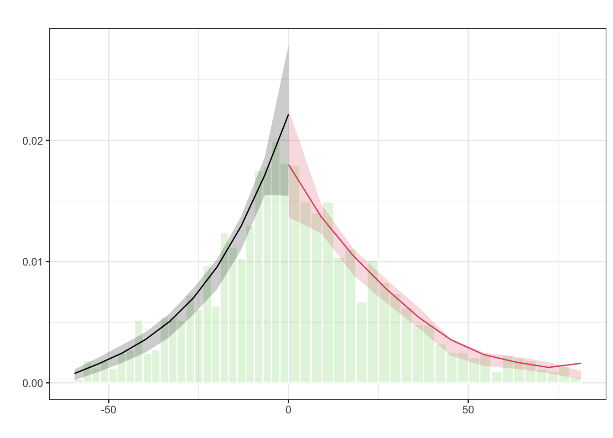
2) 条件二三四根据研究设计及背景资料进行判断。
5.5.6.3 Step 3: 画驱动变量与干预的关系图，判断sharp或者fuzzy类型
画驱动变量与干预的散点图，判断是否为sharp或者fuzzy类型。可以看出本例中，干预在cut-point前后，有明确的界限，为sharp类型。
rdrobust_RDsenate$treatment <-
ifelse(rdrobust_RDsenate$margin < 0, 0, 1)
rdrobust_RDsenate$color <-
ifelse(rdrobust_RDsenate$margin < 0,
'blue',
'red')
plot(x = rdrobust_RDsenate$margin,
y = rdrobust_RDsenate$treatment,
col = rdrobust_RDsenate$color,
type = 'p',
pch = 16,
xlab = 'Margin',
ylab = 'Treatment',
main = 'Relationship between
rating variable and treatment')
abline(v = 0)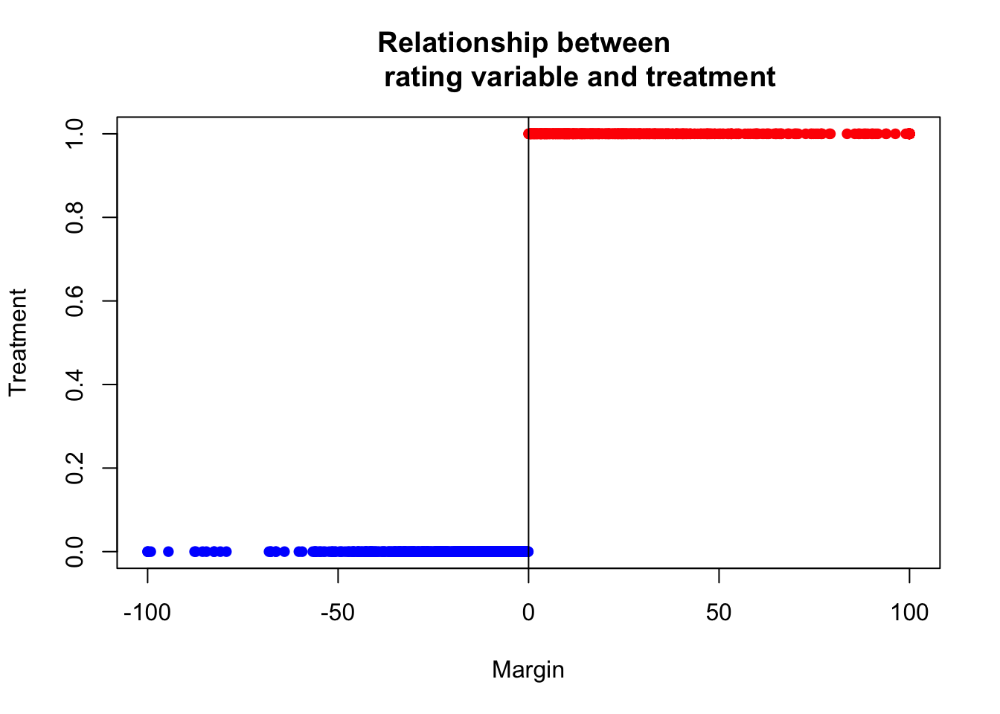
5.5.6.4 Step 4: 画驱动变量与结果变量的关系图，选择合适的bin数量
一、画散点图
横轴为驱动变量，纵轴为结果变量，画散点图，初步判断两者之间关系，但是散点图噪音(noise)太大，不利于发现跳跃点，需要对驱动变量分不同的段(intervals or bin)将使得关系取线更平顺。
# 第一步：散点图
plot(x = rdrobust_RDsenate$margin,
y = rdrobust_RDsenate$vote,
type = 'p',
col = rdrobust_RDsenate$color,
pch = 16,
cex = 0.8,
xlab = 'Margin',
ylab = 'Vote')
abline(v = 0)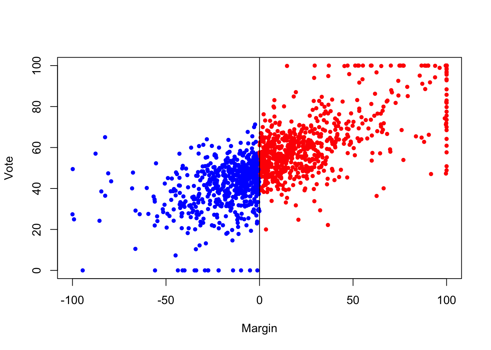
二、将驱动变量分段的步骤
将驱动变量分段后再做关系图，大致有四步：
- 将驱动变量分成若干宽度(widfh)相等的区间(bin)，但是需要注意的是不能存在骑跨cut-point的区间， 所以最好从cut-point开始分别向左右两端进行划分，并不一定要求左右两边的bin数量相等。
- 计算每个bin中的结局变量的平均值、驱动变量的中位数，以及个体的数量(num of observation)
- 将驱动变量的中位数作为横轴，将结局变量的平均值作为纵轴，同时用每个bin中个体的数量进行加权
- 为了更好的显示两变量之间的关系，最好加上局部加权平滑回归取线(如：lowess: locally weighted regression)
三、确定bins数量的方法
如何设定bin的数量或者binwidfh的方法比较复杂，bin的数量不宜过多或过少，过少起不到将噪音的作用，过多会导致jump不明显，在Stata和R中有打包的好的方法去判断bin的数量，本例中采用rdrobust包中的rdplot函数进行判断。
rdplot函数的常用参数有：
- c为cut-point，默认为0
- p为全局多项式的幂次方，默认为4
- nbins用来设定断点左右的bin的数量，默认为NULL
- kernel用来设定加权方法，默认为uniform，同时还有triangular和epanechnikov方法
- binselect为判断方法，默认为’esmv’，
判断方法常用一共4种：Evenly-spaced (es)，Quantile-spaced (qs)，以及结合mimicking-variance (MV)的esmv和qsmv，推荐使用qs方法。p和nbin如果不确定也可缺失，让binselect方法自行设定，从结果可以看出总的样本量，以及cut-point左右的样本量，以及设定的bin的数量。
bins <- rdplot(rdrobust_RDsenate$vote,
rdrobust_RDsenate$margin,
c = 0, p = 4,
nbins = c(20, 20),
binselect = 'esmv',
kernel = 'uniform')
summary(bins)Call: rdplot
Number of Obs. 1297
Kernel Uniform
Number of Obs. 595 702
Eff. Number of Obs. 595 702
Order poly. fit (p) 4 4
BW poly. fit (h) 100.000 100.000
Number of bins scale 1 1
Bins Selected 20 20
Average Bin Length 5.000 5.000
Median Bin Length 5.000 5.000
IMSE-optimal bins 8 9
Mimicking Variance bins 15 35
Relative to IMSE-optimal:
Implied scale 2.500 2.222
WIMSE variance weight 0.060 0.084
WIMSE bias weight 0.940 0.916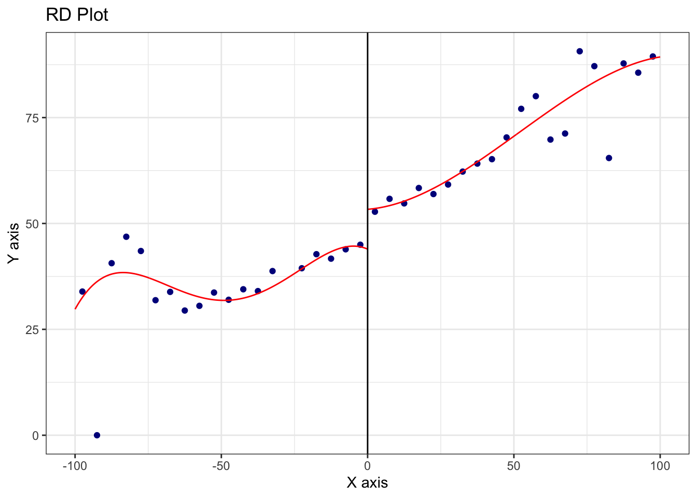
5.5.6.5 Step 5: 模型估计效应大小
1) 效应大小的估计方法一共有两种：
- 全局参数估计(Parametric/global strategy): 即是利用全部个体的数据，对驱动变量和结局变量拟合线性、二次项、三次项、四次项回归模型，此方法利用的是RD设计的”断点处不连续(discontinuity at a cut-point)“的特性。模型设定如下：
\[ \begin{aligned} Y_i = & \alpha + \beta_0 \cdot Treatment_i + \beta_1 \cdot (rating_i - cutpoint)^k + \\ & \beta_3 \cdot Treatment_i \cdot (rating_i - cutpoint)^k + \\ & \beta_4 \cdot Confouders_i + \epsilon_i \end{aligned} \]
- 式中：
- Y为结局变量，\(\alpha\) 为常数项，表示在控制驱动变量后干预组结局变量的平均值，k为多项式的幂次，通常为1到4次方，其他参数含义见字面意思，
- \(\beta_0\)就是核心关注的系数，表示干预措施在断点处的边际效应，也就是干预的处理效应。
- 而如何选择合适的次项数，需要多次尝试，通过比较AIC，选择AIC最小的模型。
- 驱动变量减去cutpoint的目的是为了中心化，为了使\(\alpha\)反映的是断点处的平均值，因为差值在断点处为0
- Confouders为混杂因素，也可以加入模型中，但是中RD分析时，混杂因素的控制不是必须的。
- 局部非参数估计(Nonparametric/local strategy): 即是在cut-point左右选择一段合适的带宽(bandwidfh)，在这一段带宽局部范围内， 拟合驱动变量和结局变量的线性或者多项式回归模型，此方法利用的是RD设计的”局部随机(local randomization)“的特性。此方法适用于样本量较大的情况， 因为样本量太少，设定带宽之后样本量将会不足，增加估计误差。前面所提到的R包中均只提供局部非参数估计函数。局部非参数估计的难点在于如何确定最优带宽，常用的方法有交叉验证法(cross validation procedure， CV)、 IK 法和 CCT 法，后两种方法较为推荐
关于上述两种方法的比较或者权衡，主要是关于精度和误差，全局参数估计因为利用了全部样本，通常对效应的估计精度更高，然而其也存在一个问题，就是驱动变量和结局变量的关系函数在越大的区间下越难以准确识别；而非参数估计可以通过局部拟合加权线性或者多项式回归模型而减少这种偏误。
以上方法主要针对sharp类型，fuzzy类型的估计方法见最后一节。
2) 全局参数估计
分为一次线性、一次线性加交互项、以及二次、三次线性及交互项，共6个模型，比较AIC或者回归残差，较小者模型较优。
rdrobust_RDsenate$margin_del <- rdrobust_RDsenate$margin - 0
# linear
fit_1 <- lm(vote ~ margin_del + treatment,
data = rdrobust_RDsenate)
# linear interaction
fit_2 <- lm(vote ~ margin_del * treatment,
data = rdrobust_RDsenate)
# quadratic
fit_3 <- lm(vote ~ margin_del +
I(margin_del ^ 2) + treatment,
data = rdrobust_RDsenate)
# quadratic interaction
fit_4 <- lm(vote ~ (margin_del + I(margin_del ^ 2)) *
treatment,
data = rdrobust_RDsenate)
# cubic
fit_5 <- lm(vote ~ margin_del + I(margin_del ^ 2) +
I(margin_del ^ 3) + treatment,
data = rdrobust_RDsenate)
# cubic interaction
fit_6 <- lm(vote ~ (margin_del + I(margin_del ^ 2) +
I(margin_del ^ 3)) * treatment,
data = rdrobust_RDsenate) library(modelsummary)
modelsummary(list("Linear" = fit_1,
"Linear interaction" = fit_2,
"Quadratic" = fit_3),
output = "kableExtra",
stars = TRUE)| Linear | Linear interaction | Quadratic | |
|---|---|---|---|
| (Intercept) | 47.331*** | 44.904*** | 45.486*** |
| (0.542) | (0.699) | (0.616) | |
| margin_del | 0.348*** | 0.216*** | 0.285*** |
| (0.013) | (0.028) | (0.017) | |
| treatment | 4.785*** | 6.044*** | 6.663*** |
| (0.923) | (0.942) | (0.963) | |
| margin_del × treatment | 0.170*** | ||
| (0.032) | |||
| I(margin_del^2) | 0.001*** | ||
| (0.000) | |||
| Num.Obs. | 1297 | 1297 | 1297 |
| R2 | 0.578 | 0.587 | 0.590 |
| R2 Adj. | 0.577 | 0.586 | 0.589 |
| AIC | 10083.7 | 10056.7 | 10049.9 |
| BIC | 10104.4 | 10082.5 | 10075.7 |
| Log.Lik. | −5037.848 | −5023.354 | −5019.946 |
| F | 886.433 | 613.586 | 619.091 |
| RMSE | 11.77 | 11.64 | 11.61 |
| + p < 0.1, * p < 0.05, ** p < 0.01, *** p < 0.001 |
3) 局部非参数估计
利用rdrobust包的rdrobust函数进行拟合。由于该包是由Sebastian Calonico, Matias D. Cattaneo and Rocío Titiunik开发，所以该包中所提供的带宽选择方法可认为就是CCT法，因为CCT本来就是Calonico, Cattaneo, and Titiunik三人姓氏的缩写。
有两种确定带宽的方法：
- 一是先利用rdbwselect函数计算出最优带宽，然后用rdrobust函数中的h参数手动指定左右的带宽。
- 二是直接利用rdrobust函数中的bdselect参数指定选择最优带宽的方法。
rdrobust包中一共提供了10种选择最优带宽的方法，如下:
其中，共包含MSE = Mean Square Error和CER = Coverage Error Rate两大类，MSE更适用于进行点估计的带宽选择， 而CER更适合区间估计的带宽选择。
以rd结尾是表示选择的带宽在cut-point左右相等，而以two结尾是表示选择的带宽在cut-point左右不相等。
h即为选择的左右最优带宽，而b给出的是用来进行敏感性分析时应该考虑的带宽。
rdbwselect(y = rdrobust_RDsenate$vote,
x = rdrobust_RDsenate$margin,
all = TRUE) %>% summary()Call: rdbwselect
Number of Obs. 1297
BW type All
Kernel Triangular
VCE method NN
Number of Obs. 595 702
Order est. (p) 1 1
Order bias (q) 2 2
Unique Obs. 595 665
=======================================================
BW est. (h) BW bias (b)
Left of c Right of c Left of c Right of c
=======================================================
mserd 17.754 17.754 28.028 28.028
msetwo 16.170 18.126 27.104 29.344
msesum 18.365 18.365 31.319 31.319
msecomb1 17.754 17.754 28.028 28.028
msecomb2 17.754 18.126 28.028 29.344
cerrd 12.407 12.407 28.028 28.028
certwo 11.299 12.667 27.104 29.344
cersum 12.834 12.834 31.319 31.319
cercomb1 12.407 12.407 28.028 28.028
cercomb2 12.407 12.667 28.028 29.344
=======================================================虽然在此文中rdrobust: An R Package for Robust Nonparametric Inference in Regression-Discontinuity Designs提到也可以通过bdselect = ’CV’或者bdselect = ’IK’来采用CV和IK法，但是在写这篇笔记时，已无法使用这两种方法。
输出的结果的最后一张表的第一行Conventional即为干预的处理效应。
# 如果有混杂因素需要控制,可以用covs = c('var1', 'var2')
loc_fit_1 <- rdrobust(rdrobust_RDsenate$vote,
rdrobust_RDsenate$margin,
c = 0, p = 1,
kernel = 'triangular',
bwselect = 'msetwo')
# c用来指定cut-point，p用来指定局部加权回归的多项式幂次
loc_fit_2 <- rdrobust(rdrobust_RDsenate$vote,
rdrobust_RDsenate$margin,
c = 0, p = 2,
kernel = 'triangular',
bwselect = 'msetwo')
loc_fit_3 <- rdrobust(rdrobust_RDsenate$vote,
rdrobust_RDsenate$margin,
c = 0, p = 1,
kernel = 'triangular',
bwselect = 'cerrd')
loc_fit_4 <- rdrobust(rdrobust_RDsenate$vote,
rdrobust_RDsenate$margin,
c = 0, p = 2,
kernel = 'triangular',
bwselect = 'certwo')modelsummary(list(loc_fit_1, loc_fit_2,
loc_fit_3, loc_fit_4),
output = "kableExtra",
stars = TRUE,
estimate = "std.error")| (1) | (2) | (3) | (4) | |
|---|---|---|---|---|
| Conventional | 1.497*** | 1.852*** | 1.680*** | 2.209*** |
| (1.497) | (1.852) | (1.680) | (2.209) | |
| Bias-Corrected | 1.497*** | 1.852*** | 1.680*** | 2.209*** |
| (1.497) | (1.852) | (1.680) | (2.209) | |
| Robust | 1.759*** | 2.056*** | 1.841*** | 2.282*** |
| (1.759) | (2.056) | (1.841) | (2.282) | |
| Kernel | Triangular | Triangular | Triangular | Triangular |
| Bandwidfh | msetwo | msetwo | cerrd | certwo |
| + p < 0.1, * p < 0.05, ** p < 0.01, *** p < 0.001 |
5.5.6.6 Step 6: 敏感性分析
敏感性分析主要用来检验模型估计结果的稳健性，RD分析主要有四种敏感性分析方式;
对前面所述的Internal Validity条件三的检验，即除了干预(Treatment)变量外，其他的任何非结局变量(包括混杂因素在内)都不能在cut-point处出现不连续或称为跳跃，如果存在，则无法推断结局变量的跳跃是由干预(Treatment)引起的，检验方式就是将所有的混杂因素作为结局，利用rdrobust函数进行检验，输出结果的coef应该很小，且p值应该统计学不显著 (Continuity-Based Analysis for Covariates)。
对cut-point的敏感性分析，即是更换cut-point，检验是否左右还存在处理效应，如果更换断点后，仍然存在处理效应，则无法说明本研究的干预措施是有效的，因为在研究设定的断点处识别到的处理效应，有可能是由其他因素引起的。
对cut-point附近个体的敏感性分析，在Internal Validity条件一中提到，驱动变量不可被操控，但是这个无法直接检验，因此，换个思路，如果驱动变量被超控，那自然是在cut-point左右离得最近的值被操纵的可能性最大，所以如果将这部分个体剔除，若仍然能观测到处理效应，则说明这种效应是真实由干预所导致。这种方法被称为甜甜圈(donut hole)法，同样也适用于个体过多的堆积与cut-point附近的RD分析。
对带宽bandwidfh的敏感性分析，即是cut-point不改变，而是更换选择的最优带宽，进行多次局部非参数检验，如果更换带宽之后，仍然能在断点处识别的处理效应，说明研究的干预措施是有效的，因为在研究设定的断点处识别到的处理效应不是由于某一特点的带宽下才观测到的，说明处理效应稳健。
1) 对cut-point的敏感性分析
选择一个虚拟的断点用来替换真正的断点，但是真实的干预情况不改变。关于虚拟断点如何选择以及选择多少个并没有明确的标准，通常在真实断点的附近，左右对称选取即可
# 除c以外的其他参数应该与前面分析保持一致
sen_cut_1 <- rdrobust(rdrobust_RDsenate$vote,
rdrobust_RDsenate$margin,
c = 1, p = 1,
kernel = 'triangular',
bwselect = 'msetwo')
# 除c以外的其他参数应该与前面分析保持一致
sen_cut_2 <- rdrobust(rdrobust_RDsenate$vote,
rdrobust_RDsenate$margin,
c = -1, p = 1,
kernel = 'triangular',
bwselect = 'msetwo') modelsummary(list(sen_cut_1, sen_cut_2),
output = "kableExtra",
stars = TRUE,
estimate = "std.error")| (1) | (2) | |
|---|---|---|
| Conventional | 1.406*** | 1.614 |
| (1.406) | (1.614) | |
| Bias-Corrected | 1.406*** | 1.614 |
| (1.406) | (1.614) | |
| Robust | 1.640** | 1.865 |
| (1.640) | (1.865) | |
| Kernel | Triangular | Triangular |
| Bandwidfh | msetwo | msetwo |
| + p < 0.1, * p < 0.05, ** p < 0.01, *** p < 0.001 |
2) 对cut-point附近个体的敏感性分析
对称剔除真实断点左右一定较小范围内的个体。关于范围的大小同样没有明确的标准，通常选取多个范围比较即可。
rdrobust_RD_hole_1 <- subset(rdrobust_RDsenate,
abs(margin) > 0.3)
rdrobust_RD_hole_2 <- subset(rdrobust_RDsenate,
abs(margin) > 0.4)
rdrobust_RD_hole_3 <- subset(rdrobust_RDsenate,
abs(margin) > 0.5)
# 除c以外的其他参数应该与前面分析保持一致
sen_hole_1 <- rdrobust(rdrobust_RD_hole_1$vote,
rdrobust_RD_hole_1$margin,
c = 0, p = 1,
kernel = 'triangular',
bwselect = 'msetwo')
# 除c以外的其他参数应该与前面分析保持一致
sen_hole_2 <- rdrobust(rdrobust_RD_hole_2$vote,
rdrobust_RD_hole_2$margin,
c = 0, p = 1,
kernel = 'triangular',
bwselect = 'msetwo')
# 除c以外的其他参数应该与前面分析保持一致
sen_hole_3 <- rdrobust(rdrobust_RD_hole_3$vote,
rdrobust_RD_hole_3$margin,
c = 0, p = 1,
kernel = 'triangular',
bwselect = 'msetwo') modelsummary(list(sen_hole_1, sen_hole_2, sen_hole_3),
output = "kableExtra",
stars = TRUE,
estimate = "std.error")| (1) | (2) | (3) | |
|---|---|---|---|
| Conventional | 1.558*** | 1.558*** | 1.591*** |
| (1.558) | (1.558) | (1.591) | |
| Bias-Corrected | 1.558*** | 1.558*** | 1.591*** |
| (1.558) | (1.558) | (1.591) | |
| Robust | 1.839*** | 1.860*** | 1.918*** |
| (1.839) | (1.860) | (1.918) | |
| Kernel | Triangular | Triangular | Triangular |
| Bandwidfh | msetwo | msetwo | msetwo |
| + p < 0.1, * p < 0.05, ** p < 0.01, *** p < 0.001 |
3) 对带宽bandwidfh的敏感性分析
即是更换不同的带宽即可，带宽的变化实际是cut-point区间范围尾部的个体在发生变化，可以通过选取不同的带宽选择方式，真实存在的处理效应不会随着带宽的改变而发生变化。
5.5.7 关于Fuzzy类型的RD模型估计方法
Fuzzy类型的RD可以根据驱动变量与干预的实际情况采取不同的处理方式:
如果只是no-shows的情况，可以结合研究目的，决定是否采取意向性分析法(intent-to-treat)
采用两阶段回归two-stage least squares (2SLS) ，两阶段模型设定如下:
第一阶段：
\[ Treatment_i = \alpha_1 + \gamma_0 \cdot treat-by-cutpoint_i + \epsilon_i \]第二阶段：
\[ Y_i = \alpha_i + \beta_0 \cdot \dot Treatment + \mu_i \]- 其中：
- \(Treatment_i\)为真实的干预情况
- \(treat-by-cutpoint_i\)是指驱动变量根据cut-point判断的是否接受了干预，为虚拟变量
- 第二阶段模型中的\(\dot Treatment\)将第一阶段模型的预测指yhat
- 其中：
通过两阶段回归，第二阶段中的Standard errors是经过了调整的。在rdrobust包的rdrobust函数中，有一个fuzzy的逻辑参数，用来指定RD类型是否为fuzzy，可以很方便的进行fuzzy类型的模型估计。
5.5.8 结束
由于真实世界的复杂性，对因果推断的分析方法的要求也越来越高，没有一种方法可以适用所有的情形，因此RD的方法也衍生发展出很多类型，包括多个断点(Multi-Cutoff RD Design)、多个驱动变量(Multi-Score RD Design)、离散驱动变量(Multi-Score RD Design)等等。